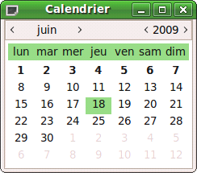
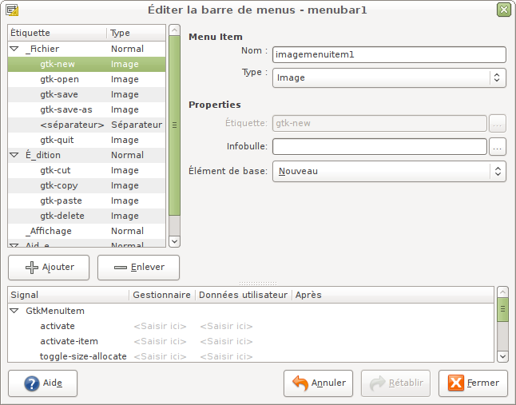
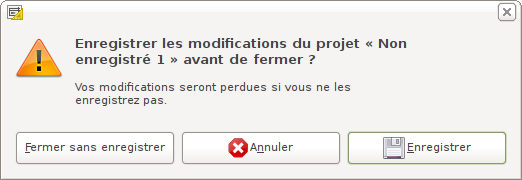
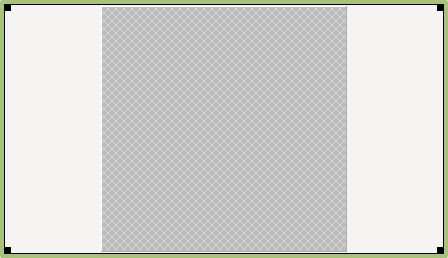

PyGTK est une librairie qui permet de créer des interfaces graphiques GTK avec le langage Python. Dans ce tuto, nous apprendrons pas à pas à créer des logiciels avec cette technologie époustouflante de simplicité. Vous arriverez en très peu de temps à concevoir de petits logiciels fort sympathiques pour épater les filles (ou les garçons). :lol:
Je tiens aussi à préciser que bien que les technologies dont il est question ici soient disponibles sur les principaux systèmes d'exploitation, ce tuto sera basé sur GNU/Linux, et plus précisément Ubuntu (quand j'aurai fini de rédiger l'intégralité de ce tuto, je penserai peut-être à l'adapter pour Windows et Mac OS X). Pour apprendre à installer et vous servir de Linux, vous pouvez lire le tuto officiel sur Linux.
Pour finir, certains points de ce cours utilisent la Programmation Orientée Objet. Si vous n'avez aucune idée de ce dont il s'agit, je vous conseille de faire un tour par le tutoriel de C++. Je vais faire de mon mieux pour que ce cours soit accessible à ceux qui ne connaissent pas la P.O.O., mais sachez quand même qu'il vaut mieux s'être renseigné là-dessus avant de commencer.
La plupart des cours que l'on trouve sur PyGTK traitent cette partie vers la fin. Personnellement, je trouve que Glade nous simplifie tellement la tâche que ça serait dommage de s'en passer tout au long du tutoriel. De plus, je vais dans cette partie vous présenter un logiciel très bien fait, ce qui aura pour effet immédiat de vous rassurer. Puisque je vous le dis ! :lol: Je vais commencer par vous parler de GtkBuilder, qui nous sera indispensable pour créer des fenêtre avec Glade.
GtkBuilder est un objet PyGTK qui permet de séparer l'interface graphique et le code dans des fichiers différents. C'est l'équivalent d'un moteur de template pour un site web. On travaillera donc avec des fichiers Python à l'extension ".py" et des fichiers Glade à l'extension ".glade".
Il y a plusieurs avantages à utiliser GtkBuilder :
notre code Python, débarrassé de la gestion de l'interface graphique va être plus court et plus clair à lire ;
avec un peu d'organisation, on peut coder à deux, une personne qui s'occupe de Python, et une autre qui fait le fichier Glade ;
il existe un logiciel intuitif qui vous aidera à créer votre fichier Glade ;
si quelqu'un veut réécrire votre programme dans un autre langage, il peut se resservir de vos fichiers Glade.
Dans notre cas, c'est-à-dire celui de débutants voulant commencer un tout petit projet, c'est le 3e point qui va nous intéresser. Le "Concepteur d'Interface Glade" va nous être d'une aide très précieuse pour nous initier à GTK. Il est vite pris en main et permet de créer en un rien de temps une interface graphique.
On n'aura plus qu'à s'occuper du code Python, ce qui est la tâche la plus intéressante du point de vue du programmeur.
J'ai entendu parler de libglade. Existe-t-il encore ?
GtkBuilder est le successeur de libglade ; il apporte de nouvelles choses comme le support de plus de widgets. De plus, les gestionnaires sont automatiquement liés aux fonctions qui portent le même nom (contrairement à libglade, avec lequel il fallait, pour chaque fonction, créer un gestionnaire et une fonction, puis les relier). Donc, GtkBuilder est donc plus complet et plus facile d'utilisation. Sachez toutefois que libglade est encore utilisé et GtkBuilder et celui-ci produisent tous deux des fichiers portant la même extension (.glade), donc la seule façon de les différencier est de l'ouvrir dans un éditeur de texte.
À l'ouverture du programme, une fenêtre de préférences s'affiche. Veuillez choisir le format de fichier du projet GtkBuilder, sinon gtk sera incapable de lire le fichier .glade. Si vous auriez choisi Libglade, l'utilisation du fichier aurait été différente.
Une fois lancé, notre concepteur d'interface ressemble à ceci :
Son interface est composée de quatre parties principales :
la colonne de gauche : notre palette de widgets ;
au centre : notre zone de travail ;
en haut à droite : l'arbre de nos widgets ;
en bas à droite : les propriétés du widget sélectionné.
La palette des widgets
Si vous ne savez pas ce qu'est un widget, c'est le moment où jamais pour l'apprendre : le widget est l'élément de base d'une interface graphique, comme l'atome est l'unité de base pour une molécule, ou encore la cellule pour un organisme vivant. Bref, vous m'aurez compris, les interfaces que nous allons créer ensemble ne sont rien d'autre qu'un amas de widgets hiérarchisés.
Regardons de plus près cette palette. Elle nous indique qu'il y a 4 familles de widgets.
Widgets de niveau supérieur
Ces widgets sont les grands-parents. Ils contiendront tous les autres, mais ne peuvent être contenus eux-mêmes. C'est pour ça qu'ils sont dits "de niveau supérieur".
Il s'agit des fenêtres et des boîtes de dialogue.
Vous pouvez en ajouter quelques-uns sur notre zone de travail simplement en les sélectionnant dans la palette. Vous constaterez qu'il en existe de très complexes, qui sont en fait des assemblages de widgets plus simples. Comme ces assemblages reviennent dans énormément de programmes, on les a réuni dans un seul widget pour vous simplifier la tâche !
Conteneurs
Ces widgets comme leur nom l'indique vont contenir d'autres widgets plus petits. Ils servent à organiser l'intérieur d'une fenêtre. Il s'agit de tableaux, de frames, de menus et d'onglets. Leur utilisation avisée fera que votre interface sera bonne ou pas.
On peut bien sûr les imbriquer les uns dans les autres pour arriver à des configurations complexes et adaptées.
Vous pouvez essayer d'en ajouter, mais il faudra au préalable avoir posé une fenêtre sur la zone de travail ! Pour ajouter un conteneur, sélectionnez-le dans la palette, puis cliquez dans la zone de travail sur le widget qui sera son parent.
Contrôle et affichage
Voilà maintenant plein de petits widgets de base tous plus utiles les uns que les autres ! Toutes sortes de boutons, des labels, des images, des zones de texte, tout y est.
Leur utilisation détaillée fera l'objet de la plus grosse partie de ce cours. Mais sachez déjà que les possibilités offertes par ces widgets sont immenses, et que le cours ne pourra jamais tout couvrir. C'est là que lire la documentation de PyGTK vous sera utile. :)
Les widgets obsolètes
Ces widgets ne sont plus d'actualité, il est déconseillé de les utiliser donc nous n'en parlerons pas ici. Vous vous demandez sûrement pourquoi on les a mis là si on ne doit plus les utiliser ? Simplement pour un souci de rétrocompatibilité : le concepteur doit rester capable d'ouvrir de vieux fichiers Glade.
La zone de travail
C'est l'équivalent de la zone de dessin pour un logiciel de dessin. Ce que vous y verrez dépendra de votre projet.
Elle donne un aperçu du look final de votre interface, ce qui est utile quand il s'agit de régler finement des marges ou autres petits détails. C'est bien entendu dans cette zone qu'on organisera nos widgets entre eux, et à ce titre-là elle fait double emploi avec l'"arbre des widgets" que je vais vous présenter de ce pas.
L'arbre des widgets
Voilà une partie du concepteur qui est bien plus importante qu'il n'y paraît.
On y trouve la hiérarchie des widgets de notre interface, sous forme d'un arbre dont on peut déplier les branches.
Pourquoi cette partie est-elle si importante ?
Il est très aisé d'y sélectionner un widget précis, ce qui peut s'avérer compliqué dans la zone de travail, dans le cas d'un widget extrêmement petit par exemple.
Le clic droit sur un widget nous donne accès à des actions très utiles, comme insérer/supprimer un parent !
Dans le cas où l'on travaille avec plusieurs widgets de niveau supérieur, c'est la seule façon pour passer de l'un à l'autre.
La zone des propriétés
Cette zone en bas à droite du concepteur permet de modifier les propriétés du widget sélectionné. C'est une partie immense qu'on ne pourra pas trop détailler, mais rassurez- vous, on en verra les grandes lignes car elle est très utile.
Comme vous vous en doutez, elle s'adapte à chaque widget, on y trouvera donc des choses différentes selon qu'on a sélectionné une fenêtre ou un bouton par exemple. Mais bien qu'elle change tout le temps de contenu, ce contenu est toujours organisé de la même manière à l'aide de cinq onglets :
général : pour des propriétés générales telles que le nom du widget ;
regroupement : pour régler le comportement graphique du widget par rapport aux autres ;
commun : pour régler des propriétés communes à tous les widgets (par exemple le fait qu'il soit visible ou caché) ;
signaux : pour régler, je vous le donne en mille... les signaux émis par les widgets. On verra de quoi il s'agit plus tard ;
accessibilité : pour rendre votre interface lisible par un lecteur d'écran pour non-voyants. Comme je ne connais pas encore cette partie, je ne pense pas écrire dessus.
Avant de passer à la suite, j'aimerais qu'on étudie un peu les fichiers glade.
Je vais vous demander de créer une interface avec le concepteur. N'importe laquelle, amusez vous.
Vous allez ensuite la sauvegarder dans un fichier, et ouvrir ce fichier non pas avec le concepteur d'interface, mais avec votre éditeur de texte favori.
Les plus futés d'entre vous reconnaîtrons un fichier XML. Si on y regarde de près, on y retrouve la hiérarchie de nos widgets. Et je dirai même qu'on n'y retrouve que ça. C'est-à-dire qu'il n'y a pas de code pour exécuter notre interface. Ce code-la, c'est nous qui devrons l'écrire avec nos petites menottes.
Mais on peut quand même dire un grand merci au concepteur d'interface, imaginez si on avait dû écrire ce fichier glade à la main, ou pire, le coder directement en python comme je vous apprendrai dans la suite du cours... Mouhahaha ! :lol:
Voilà, vous êtes maintenant le maitre du Concepteur Glade. Ce logiciel vous obéit au doigt et à l'oeil, rapporte le baton et vous donne la papate. Quoi ? Ce n'est pas le cas ? Alors il va falloir l'apprivoiser. :) Je suis sérieux, bien que ce logiciel soit intuitif, il est important de passer du temps à jouer avec, car GTK est un toolkit immense qui demande un moment avant d'être maîtrisé.
Nous allons dans cette partie créer notre premier petit programme. Pas de quoi sauter au plafond pour l'instant, il s'agit juste d'une introduction, mais il faut bien commencer par quelque chose ! :)
GUI signifie Graphical User Interface, c'est un acronyme pour dire interface d'utilisateur. Comme c'est plus court, j'utiliserai désormais GUI. Dommage qu'il n'y ait pas la même chose pour widget, car je risque de l'écrire encore plus souvent...
Bon, prenez vos cahiers... Euh, votre concepteur. Dictée !
Pour notre premier programme qu'on appellera "Hello World !" pour respecter la tradition, nous allons utiliser les 3 types de widgets.
Et une fenêtre, une !
Commençons donc par ajouter une fenêtre. Cliquez juste sur le bouton fenêtre dans la palette, et elle devrait apparaître dans la zone de travail :
Dans les propriétés de la fenêtre, onglet "Général", nous allons lui donner un nom et un titre. Le nom nous servira à identifier le widget dans notre code Python, tandis que le titre correspondra au texte qui apparaîtra dans la barre en haut de notre fenêtre.
J'ai choisi comme nom "mainWindow" et comme titre "Hello World !" :
Autre réglage important, pour ne pas dire primordial, dans l'onglet "Commun" nous allons mettre la propriété "Visible" à la valeur "Oui".
Ne rigolez pas, mais une fois j'ai cherché pendant plusieurs heures pourquoi rien ne s'affichait quand je lançais mon programme... :lol: Quand j'ai compris pourquoi je m'en suis voulu.
Maintenant, faisons un tour dans l'énigmatique onglet "Signaux". Dans la partie GtkObject, à la ligne "destroy", nous allons écrire "on_mainWindow_destroy".
Ce que nous venons de faire doit vous paraître bien ésotérique, mais nous avons simplement attaché un gestionnaire à un signal. Quand notre fenêtre est détruite (par un clic sur le bouton fermer) elle émet un signal appelé "destroy". Dans notre code Python, une fonction appelée on_mainWindow_destroy() que nous écrirons nous-mêmes terminera notre programme.
Voilà pour la fenêtre.
Maintenant, une boîte verticale
Nous allons ensuite y ajouter une boîte verticale, ou GtkVBox pour les intimes. Dans la palette, section "Conteneurs", cliquez sur la "Boîte Verticale". Rien ne se passe, c'est normal. Il faut maintenant cliquer dans la fenêtre que nous venons de créer.
Si tout se passe bien, une boîte de dialogue vous demandant le nombre de lignes de la VBox apparaîtra :
Comme moi, choisissez 2.
Voilà maintenant voyons à quoi ressemble notre espace de travail :
Youpi ! ^^
Hello label !
Pour ceux qui l'ignorent, un label est simplement un morceau de texte. Nous allons en ajouter un dans la ligne supérieure de notre VBox toute fraîche.
Pour cela on procède comme la dernière fois : dans la palette, section "Contrôle et affichage", cliquez sur le bouton représentant un label. Puis, dans la zone de travail, cliquez dans la partie haute de notre VBox.
Voilà notre label ajouté :
On va modifier un peu les propriétés de ce label. Dans l'onglet "Général", changez le nom pour "myLabel" et l'étiquette pour "Hello" :
Voilà pour le label. :-°
Un bouton
Ok, maintenant on ajoute un bouton dans la partie basse de la VBox. Je ne vais pas détailler la procédure une troisième fois, faites juste attention de ne pas confondre avec un "ToggleButton", car nous avons besoin d'un simple "Button". Comme ceci :
Il faut modifier ses propriétés.
Dans l'onglet "Général", changez le nom pour quelque chose de plus reconnaissable, du genre "myButton". Vous pouvez aussi changer l'étiquette, si ça vous tente. Mais ce dont ce bouton a vraiment envie, c'est que quand on clique dessus il se passe quelque chose ! Alors on va ajouter un gestionnaire à son signal "clicked" :
Ouf ! C'est fini ! :-°
On sauve notre travail
Sauvegardez tout ça dans un fichier Glade. J'ai nommé le mien "hello_world.glade".
Pour les tricheurs qui ne veulent pas suivre sérieusement ce tuto, voilà le résultat final :
Dans le même dossier que votre hello_world.glade, vous allez créer un hello_world.py. Pour le rendre exécutable, faites un clic droit -> propriétés et cochez la case "Autorisez l'exécution du fichier comme un programme" :
Maintenant, ouvrez ce hello_world.py avec votre éditeur de texte préféré. Nous allons y écrire notre script. :)
J'ai fait le choix de vous donner le script déjà tout fini pour pouvoir le commenter ligne par ligne tout en ayant une vision globale du produit fini :
Elle définit où trouver l'interpréteur Python qui lira et exécutera notre script. Tous les scripts Python commencent par une ligne du même genre. Ainsi, quand on exécutera notre fichier, le système saura quel programme devra le lire (dans notre cas, Python).
On a ensuite un bloc d'import :
import pygtk
pygtk.require("2.0")
import gtk
Ici, on importe simplement les modules dont on aura besoin pendant notre programme. Notez qu'on demande à PyGTK d'être au moins dans sa version 2.0.
Il s'agit d'une classe. La classe "HelloWorld". Si vous n'avez jamais touché à la POO (Programmation Orientée Objet) sachez juste qu'il s'agit d'un sac dans lequel on range des fonctions qui ont un thème commun. Vous n'avez pas besoin de connaître la POO pour suivre ce tuto, et ça n'en est pas non plus le thème principal, donc je n'en dirai pas plus pour le moment.
Nous allons plutôt nous intéresser aux fonctions que cette classe contient, et qui constituent le corps de notre programme.
Nous avons donc une fonction __init__, qui se lance automatiquement au démarrage du programme. Dans cette fonction, et comme son nom l'indique, on va faire toutes sortes de tâches d'initialisation. :)
Et comme notre programme ne fait pas grand chose, c'est cette fonction qui est la plus grosse. Dans des programmes plus fournis, ce ne sera pas le cas.
Avec ces lignes, nous stockons notre fichier Glade dans une variable. C'est à partir de cette variable nommée interface que nous accéderons à nos widgets.
self.myLabel = interface.get_object("myLabel")
Ici, on stocke dans une variable self.myLabel notre widget myLabel pour pouvoir agir dessus plus tard. Par exemple en modifiant le texte qu'il contient. ;)
interface.connect_signals(self)
Cette ligne de code très importante va relier les signaux aux fonctions. Ainsi, quand on fermera la fenêtre, la fonction self.on_mainWindow_destroy sera exécutée. De même, quand on cliquera sur le bouton, la fonction self.on_myButton_clicked sera exécutée. On appelle cela de la programmation événementielle : le programme tourne en boucle en attendant un événement. Puis un jour, quelqu'un clique sur le bouton. Le programme reçoit un signal, et agit en conséquence. :) En fait, cette ligne connecte tous les signaux que l'on a précisés dans le concepteur Glade si les méthodes sont dans la même classe (les fonctions et méthodes à l'extérieur ne seront pas trouvés par cette méthode). Les méthodes créées doivent porter le même nom que l'on a mis dans Glade. Dans le concepteur, nous avions préciser le gestionnaire on_mainWindow_destroy pour le signal destroy de notre fenêtre. Grâce à Gtk.Builder, lorsque le signal destroy est émit, la fonction on_mainWindow_destroy, ou la méthode self.on_mainWindow_destroy selon les cas, sera appelée lors de l'émission du signal.
Et si la fonction se trouve à l'extérieur, ou si je n'utilise pas le POO, comment faire pour relier le gestionnaire à une fonction ?
Eh bien, il faudra écrire autre chose que self : un dictionnaire. Exemple :
Ici, la fonction quitter n'est pas dans la classe et la méthode self.changerTexte l'est. Mais, cela a l'inconvénient d'avoir à écrire toutes les fonctions une à une.
Fin de la fonction __init__. Le programme est initialisé, plus rien ne se passe... Plus rien ? Sauf si on appuie sur le bouton, ou qu'on ferme la fenêtre !!!
Passons maintenant à la fonction on_mainWindow_destroy, fonction qui est appelée quand on ferme la fenêtre :
Alors d'après vous, que fait cette fonction ? Elle change le texte de notre label bien sûr. :D
Voilà, nous avons fini d'étudier notre classe "HelloWorld".
Il ne nous reste que ce petit bout de code à voir :
if __name__ == "__main__":
HelloWorld()
gtk.main()
Il sert juste à lancer notre classe HelloWorld. La dernière instruction gtk.main() est une boucle infinie qui empêche notre programme de se fermer dès son lancement.
Mais on va le lancer dans le terminal pour avoir droit au débuggeur de Python en cas de problème.
Rendez-vous donc, avec le terminal, dans le dossier contenant vos deux fichiers (chez moi ils sont sur le bureau) :
cd Bureau/
Puis lancez notre programme comme ceci :
python hello_world.py
Si tout se passe bien, vous verrez dans un coin de l'écran notre minuscule fenêtre apparaître.
Tiens, c'est bizarre, elle n'était pas un peu plus grande dans le concepteur ? Elle a rétréci au lavage ou quoi ?
C'est juste que nous n'avons pas défini de dimension minimale pour la fenêtre. Mais je suis sûr que vous avez le niveau pour le faire maintenant. :)
Voilà notre programme une fois redimensionné par nos soins :
Et quand on appuie sur le bouton : surprise !!! :D
Dans le chapitre précédent, vous avez vu comment créer la partie visuelle de votre programme. Maintenant, vous savez comment faire pour lier cette partie à du code Python. Vous avez appris comment relier l'émission d'un signal à une fonction. Sachez que vous ne pourrez plus vous passez des signaux : ils sont le coeur des programmes PyGtk (pensez-y, comment faire pour interagir avec un utilisateur sans les signaux). Dans le prochain chapitre, vous verrez comment faire une fenêtre sans Glade.
Depuis le début de ce tuto, je vous rabâche que Glade est un outil génial et vous encourage à vous en servir. Pourquoi donc apprendre à coder avec PyGTK sans glade ? Aurais-je changé d'avis sur un coup de tête ?
Rassurez-vous, ^^ nous continuerons à utiliser Glade tout au long du cours. Mais il faut aussi apprendre à utiliser PyGTK sans faire de détour. Le mieux est de maîtriser les deux façons de faire pour savoir tirer les avantages d'une méthode ou d'une autre selon le contexte !! :-°
Glade est parfait dans le cas d'une GUI statique. Mais imaginez une GUI qui évolue au cours du déroulement du programme... Dans ce cas-là, la meilleure méthode consiste à utiliser Glade pour la base de la GUI (statique) et PyGTK pour ajouter des widgets à la volée (dynamique).
Cette technique devient même obligatoire dans certains cas, par exemple si votre programme doit lister des éléments et les afficher chacun dans un widget qui lui est propre. Vous n'aurez d'autre alternative que de lui faire ajouter ces widgets dynamiquement.
Rien de tel que de sauter directement sur un exemple de code. Voici notre bon vieux script "Hello World !" que j'ai quelque peu modifié. Comme vous vous en doutez, cette version est faite pour fonctionner seule, sans fichier .glade.
Première remarque : le code n'est pas beaucoup plus long, 32 lignes contre 22. C'est dû au fait que notre programme est tout petit. Sur un programme plus conséquent, la version Glade serait en proportion beaucoup plus courte.
Deuxième remarque : la seule chose qui a changé, c'est le contenu de la fonction __init__. Normal, c'est dans cette dernière qu'on chargeait notre fichier Glade pour en lire le contenu. J'ai donc effacé tout l'ancien code pour le remplacer par le nouveau.
Ce nouveau code fait quatre sortes d'actions :
créer des widgets ;
configurer ces widgets ;
relier leurs signaux à nos fonctions ;
imbriquer les widgets les uns dans les autres.
Nous allons étudier en détails chaque ligne du programme.
On crée la fenêtre, et on lui donne un titre :
mainWindow = gtk.Window()
mainWindow.set_title("Hello World !")
Jusque là, rien de compliqué ! :)
Ensuite nous connectons le signal "destroy" de la fenêtre à la fonction self.on_mainWindow_destroy() qui quitte le programme :
Maintenant tous nos widgets semblent avoir été créés. Tous ? Pas vraiment, il reste le conteneur qui va englober le bouton et le label. Comme il est invisible, je l'avais oublié. :p
vBox = gtk.VBox()
Voilà qui est fait.
Par ces deux lignes de code, on ajoute le label puis le bouton dans la vBox :
Le label en haut, et le bouton en bas :) grâce à la méthode pack_start() de gtk.VBox().
Pour finir, on ajoute notre vBox dans la fenêtre :
mainWindow.add(vBox)
La méthode add() est très utile car elle sert à ajouter un widget dans un autre. Elle n'est valable que pour les widgets qui ne peuvent avoir qu'un seul enfant. Les widgets pouvant en contenir plusieurs ont des méthodes bien à eux pour le faire (par exemple pack_start() de gtk.VBox() que nous venons de voir).
Et on rend tous les widgets contenus dans cette fenêtre visibles :
mainWindow.show_all()
Voilà pour l'analyse de ce petit script. J'espère que ça vous aura été utile.
Vous trouverez dans cette liste les constructeurs qui permettent de créer n'importe quel widget directement dans votre code comme nous venons de le voir. Et chose bien plus utile encore, chacun de ces widgets est détaillé, avec toutes ses propriétés, ses méthodes, ses ancêtres, etc.
Parcourir cette documentation vous fournira une vision à la fois globale et détaillée de comment fonctionne GTK+. Je vous conseille d'y plonger le nez dès que vous avez un doute sur comment utiliser tel ou tel widget. De temps en temps, on tombe sur des petits bouts de code très utiles.
Bien sûr, cette documentation n'existe qu'en anglais (à ma connaissance). C'est le cas de la plupart des documentations et c'est pour cette raison qu'il faut un bon niveau d'anglais technique pour exercer la profession de développeur. Pour ceux qui ne parlent pas un mot d'anglais, rassurez-vous tout de même car la seconde partie du cours portera justement sur l'ensemble des widgets et leur utilisation. :)
C'est très bien tout ça, mais, moi, je n'ai pas l'habitude de lire ça. Comment fait-on ?
Je vais vous montrer comment lire cette documentation. Disons que nous voulons tout savoir sur les boutons : il faut cliquer sur gtk.Button et nous arrivons sur la page qui nous intéresse.
Courte description
Tout en haut, nous avons le nom du widget et, un peu plus bas, nous avons sa description courte ("A pushbutton widget that issues a signal when clicked." qui signifie "Un widget bouton-poussoir qui émet un signal lorsqu'on clique dessus.")
Sommaire
Encore un peu plus bas, dans Synopsis, nous avons des liens qui nous amènent plus bas dans la page. Si on clique sur gtk.Button, nous arrivons à la méthode constructeur. Ici, il est écrit les paramètres que nous pouvons envoyer au constructeur (label, stock et use_underline). Si nous regardons plus bas, nous pouvons voir ce que sont ces paramètres. On découvre donc que label change le texte du bouton, que stock change le "Stock Id" (je vais revenir sur les "Stock Id" plus tard) et que use_underline permet de souligner le texte du bouton. Pour qu'un caractère dans le label soit souligné, il faut le précéder d'un trait de soulignement (underscore "_") ; vous voyez tout y est écrit.
Les méthodes
Si on clique sur une méthode, nous arrivons à la ... méthode. Sur le fond gris, nous trouvons le prototype de la méthode. Sur le fond orange pâle, nous trouvons la description des paramètres. Et plus bas, il est écrit ce que fait la fonction.
Ancêtres
Remontons tout en haut et décendons jusqu'à "Ancestry" qui nous indique les ancêtres du widget. Nous apprenons que gtk.Button descend de gtk.Bin, qui lui descend de gtk.Container, qui lui descend de gtk.Widget, etc.
Propriétés du widget
Maintenant, descendons à "gtk.Button Properties" qui nous indique les attributs du widget. Ce n'est pas très utile de les connaître, car il existe presque tout le temps des méthodes pour les modifier.
Propriétés des signaux du widget
Ensuite, rendons-nous à "gtk.Button Signal Prototypes", une section très importante, car c'est dans celle-ci que nous apprennons quels signaux existent pour chaque widget. Cliquons sur l'un d'eux, "clicked", par exemple. Nous arrivons presqu'en bas de la page. Ce qui est important de remarquer ici, c'est la ligne commençant par "def callback(". Il y a les paramètres des fonctions callback (fonction que l'on lie à un widget). Les paramètres sont ensuite décrit plus bas.
Que veut dire "user_param1, ..." ?
Ha oui j'oubliais :p Reprenons l'exemple plus haut :
Nous aurions pu procéder d'une autre façon. Il aurait été possible, en effet, de ne pas mettre self. devant myLabel et transmettre le label à la fonction comment ceci.
Comme vous pouvez le voir "myLabel" a été transmis à la fonction "change_Label" en dernier paramètre.
Pourquoi il y a "..." après de "user_param1" ?
Cela signifie qu'on peut mettre autant de paramètres que l'on veut.
Description
Il nous reste qu'une section à voir. Revenons en haut de la page et descendons jusqu'à "Description". Il s'agit de la description complète (et non, je ne vais pas traduire :-° ).
Dans cette partie, vous avez vu les deux façons de créer une fenêtre. Et maintenant, attaquons-nous à la deuxième partie qui traite sur les widgets. Vous les verrez tous !
Voilà, la fin de la première partie du cours est arrivée. J'espère que ça vous a plu et que c'était compréhensible. Si vous maîtrisez ces notions de base et si lire la doc en anglais ne vous fait pas peur, vous pouvez déjà voler de vos propres ailes dans l'apprentissage de la suite !
Pour les autres, rassurez-vous, la deuxième partie du cours traitera en long et en large des widgets et de leur utilisation. Mais comme c'est un gros morceau, j'ignore encore quand elle sera terminée.
Bienvenue dans la deuxième partie de ce cours. Vous y verrez de nombreux widgets et vous ferrez vos premiers TP avec PyGtk. Au programme, un éditeur de texte et un navigateur web. C'est maintenant que les choses sérieuses commencent !
gtk.Window est une fenêtre de base, celle que nous avons utilisée dans notre application "Hello World!". Elle est assez simple d'utilisation, et ne peut contenir qu'un seul widget enfant.
Construction
Pour créer une gtk.Window, on procède de cette façon :
fenetre = gtk.Window(type=gtk.WINDOW_TOPLEVEL)
Ici on a spécifié le type de notre fenêtre à la valeur gtk.WINDOW_TOPLEVEL, ce qui est le bon choix dans la grande majorité des cas. Cependant, comme c'est la valeur par défaut de la classe, il est inutile de préciser ce paramètre. À titre d'information, sachez juste qu'on peut aussi créer des fenêtres de type gtk.WINDOW_POPUP qui sont un peu spéciales. Ce type peut correspondre par exemple à une infobulle (les infobulles sont des fenêtres affichant des informations au survol de la souris). Il peut aussi correspondre à des splash screen.
Méthodes
Voici le genre d'actions qu'on peut effectuer sur une gtk.Window :
fenetre.set_title("Un titre") # change le titre de la fenêtre (il est bien entendu inutile de mettre un titre à une splash screen)
fenetre.move(x, y) # deplace la fenêtre aux coordonnées (x, y) de l'écran
fenetre.set_position(gtk.WIN_POS_CENTER) #Place la fenêtre au centre de l'écran. Choix posibles: gtk.WIN_POS_CENTER, gtk.WIN_POS_MOUSE, gtk.WIN_POS_CENTER_ALWAYS, gtk.WIN_POS_CENTER_ON_PARENT (respectivement: Centré, à la position de la souris, Toujours centré, Centré sur le parent)
fenetre.resize(largeur, hauteur) # redimentionne la fenêtre en hauteur et largeur specifiés
fenetre.set_default_size(largeur, hauteur) #Indique les dimensions par défaut
fenetre.add(enfant) # ajoute un widget enfant dans la fenêtre
fenetre.set_icon_from_file("icone.png") #Spécifie une icône pour la fenêtre (en haut à gauche)
fenetre.maximize() #Donne à la fenêtre la taille maximale qu'elle peut avoir (maximizer)
Vous trouverez la liste de ces méthodes dans la documentation de gtk.Window. Il est très important d'apprendre à lire cette documentation. En général, on ne se sert que d'une petite partie des méthodes disponibles pour interagir avec un widget, à vous de trouver celles dont vous avez besoin. Les noms des méthodes sont assez évocateurs, et une description détaillée de chaque méthode est là pour vous servir de mode d'emploi.
Bien sûr, il ne faut pas oublier de lier la fenêtre à un signal pour fermer le programme lors de la fermeture de la fenêtre, de l'afficher et de lancer la boucle du programme:
fenetre.connect("destroy", gtk.main_quit) #Si la fenêtre est détruite, on ferme le programme
fenetre.show() #Affichage du widget fenetre (utiliser la méthode show_all() si la fenêtre a un enfant)
gtk.main() #Boucle principale
Avec Glade
Je vais vous montrer comment changer quelques propriétés d'une fenêtre avec le concepteur d'interface Glade. Tout ce qui suit se trouve sous l'onglet Général. Premièrement, vis-à-vis Type de la fenêtre :, vous pouvez choisir de créer une fenêtre Popup (par exemple, pour les splashscreens) ou une de niveau supérieur (fenêtre normale). Deuxièmement, vous pouvez changer le titre de la fenêtre dans la zone de texte suivant Titre de la fenêtre :. Ensuite, après Position de la fenêtre :, vous pouvez décider de changer la position initiale de la fenêtre dans l'écran. Puis, en cochant les cases Largeur par défaut : et Hauteur par défaut :, vous pouvez changer les dimensions par défaut de la fenêtre. Après Icône :, vous pouvez écrire le nom d'une image se trouvant sur votre disque dur pour qu'elle soit l'icône du programme.
Maintenant, sous l'onglet Commun, n'oubliez de rendre la fenêtre visible ! Je ne vais pas vous détailler toutes les options, vous êtes capables de faire vos tests vous-même.
Les étiquettes (gtk.Label()) permettent d'afficher du texte. Nous allons commencer par voir comment en créer une et y afficher du texte. Ensuite, nous verrons comment modifier les attributs du texte (le mettre en gras, par exemple)
Construction
Créer un label est chose toute simple:
label = gtk.Label("texte")
Voyons maintenant un exemple dans lequel vous apprendrez comment modifier les attributs du texte:
# -*- coding:Utf-8 -*-
import pygtk
pygtk.require('2.0')
import gtk
fenetre = gtk.Window(gtk.WINDOW_TOPLEVEL)
fenetre.set_title("Les étiquettes")
fenetre.set_position(gtk.WIN_POS_CENTER)
fenetre.connect("destroy", gtk.main_quit)
etiquette = gtk.Label() #Création d'une étiquette
etiquette.set_text("<b>Gras</b>\n<i>Italique</i>\n<u>Souligné</u>\n<s>Barré</s>\n<sub>indice</sub>\n \
<big>Grand</big>\nNormal\n<small>Petit</small>\n<tt>Télétype</tt>\n<span font-family=\"arial\">Arial</span>\n \
<span font-family=\"times\">Times</span>\n<span font-family=\"courrier\">Courrier</span>\n \
<span size=\"xx-large\">Très très grand</span>\n<span foreground=\"red\">Rouge</span>\n \
<span background=\"yellow\">Fond jaune</span>") #Changement du texte de l'étiquette
etiquette.set_justify(gtk.JUSTIFY_CENTER) #Change la position du texte. Choix posibles (gtk.JUSTIFY_LEFT (défaut), gtk.JUSTIFY_RIGHT, gtk.JUSTIFY_CENTER, gtk.JUSTIFY_FILL)
etiquette.set_use_markup(True) #Utiliser la mise en forme
fenetre.add(etiquette)
fenetre.show_all()
gtk.main()
Le résultat est le suivant:
Regardons ce code pas à pas. Premièrement, on importe les modules et on crée une fenêtre ; je ne reviens pas là-dessus.
Ensuite, nous créons l'étiquette. Puis, nous changeons le texte de cette étiquette avec set_text :
etiquette.set_text("<b>Gras</b>\n<i>Italique</i>\n<u>Souligné</u>\n<s>Barré</s>\n<sub>indice</sub>\n \
<big>Grand</big>\nNormal\n<small>Petit</small>\n<tt>Télétype</tt>\n<span font-family=\"arial\">Arial</span>\n \
<span font-family=\"times\">Times</span>\n<span font-family=\"courrier\">Courrier</span>\n \
<span size=\"xx-large\">Très très grand</span>\n<span foreground=\"red\">Rouge</span>\n \
<span background=\"yellow\">Fond jaune</span>") #Changement du texte de l'étiquette
Hé ! Je n'arrive pas à lire ce qu'il y est écrit ! Pourquoi ...?
C'est de cette façon qu'il est possible de mettre en forme le texte ; c'est à la manière du xHTML (ceux que le connaissent ne se sentiront pas dépaysagés ;) ) Je vais vous parler de ce "code" après avoir parler du programme en entier. Ensuite, il y a:
etiquette.set_justify(gtk.JUSTIFY_CENTER)
Ceci permet de centré le texte: les choix possibles sont gtk.JUSTIFY_LEFT (par défaut, alligne à gauche), gtk.JUSTIFY_RIGHT (alligne à droite), gtk.JUSTIFY_CENTER (centré), gtk.JUSTIFY_FILL (ne fonctionne pas tout le temps, remplir toute la ligne) Puis, on utilise une méthode qui permet d'utiliser la mise en forme:
etiquette.set_use_markup(True)
Enlever cette ligne et vous verrez la différence :D
The Pango Markup Language
Le Pango Markup Language (ou en français, le langage de balisage Pango) permet de modifier les attributs du texte. Pour cela, il faut utiliser ce qu'on appelle des balises. Une balise ressemble à ceci: <balise> On doit l'ouvrir (<balise>) et la fermer (</balise>, remarquer le / qu'on ajoute pour la fermer). Tout ce qui est compris entre une balise ouvrante et une balise fermante sera modifier par celles-ci.
Regardons plus en détail le texte du label. La première ligne est : <b>Gras</b> Ce qui est compris entre <b> et </b> sera en gras.
Ensuite, on a : <i>Italique</i> Ce qui est compris entre <i> et </i> sera en italique.
Plus loin, on voit : <span font-family=\"courrier\">Courrier</span> Cette balise est un peu étrange, il a quelque chose en plus, vous ne trouvez pas ? La balise <span> accepte ce qu'on appelle des attributs. Les attributs sont des caractéristiques de la balise. Dans l'exemple plus haut, l'attribut est font-family (police d'écriture du texte). font-family=\"courrier\" signifie que je veux que l'attribut font-family soit affecté de "courrier" (c'est une police d'écriture).
Hé ! Pourquoi as-tu mis des backslash (\) ?
Comme les limites du texte sont définies par des guillemets ("), il ne faudrait pas que celles dans le texte soient prises en compte par l'interpréteur. Pour qu'elles ne soient pas prises en comte, je dois les prédéder d'un backslash (\). Si je ne les aurais pas mis, il y aurait eu une erreur.
Et les backslash à la fin des lignes, qu'est-ce qu'ils font là ?
J'ai inséré des backslash à la fin des lignes pour limiter leur grandeur. Enlever-les et vous verrez que votre éditeur de texte avancé (si vous en avez un) ne colorera que la première ligne, donc le reste ne ferra pas partie du texte.
Je vais vous faire un petit tableau de tout ce qu'on peut faire.
Balises
Descriptions
<b>Gras</b>
"Gras" sera en ... gras !
<i>Italique</i>
"Italique" sera en italique
<u>Souligné</u>
"Souligné" sera souligné
<s>Barré</s>
"Barré" sera barré
<sub></sub>
Met le texte en indice
<sup></sup>
Met le texte en exposant
<big></big>
Met le texte plus gros
<small></small>
Met le texte plus petit
<span font-family=""></span>
Change la police d'écriture
<span size=""></span>
Change la taille du texte. On peut utiliser 'xx-small', 'x-small', 'small', 'medium', 'large', 'x-large', 'xx-large' (de très très petit à très très grand)
<span foreground=""></span>
Changer la couleur du texte. Vous pouvez utiliser certaines couleurs en indiquant le nom en anglais (par exemple : red, green, blue), ou bien utiliser le hexadécimal.
<span background=""></span>
Changer la couleur d'arrière-plan du texte. Même remarque pour les couleurs
Vous savez maintenant comment afficher du texte et le mettre en forme. Nous n'avons pas tout vu, mais vous pouvez aller voir dans la documentation à cette page. Notez qu'il est possible de mettre plus d'un attribut dans les balises <span>.
Comment faire avec le Concepteur d'Interface Glade ?
Je vais vous expliquer comment créer des étiquettes pouvant utiliser ces balises avec Glade. Après avoir créer une étiquette, sélectionner-la et aller à l'onglet Général. Vous devez écrire votre texte dans la zone de texte suivant le mot Étiquette :. Et pour que vous puissiez utiliser les balises, cochez la case précédant Utiliser des balises :.
Comme vous l'avez appris dans la première partie, il est impossible d'insérer plus d'un widget enfant à une fenêtre. Pour pallier ce problème, certains conteneurs ont été créés. On note les boîtes, les tableaux, les onglets, les cadres, les panneaux et plusieurs autres. Ici, nous verrons les boîtes, aussi bien horizontales que verticales, pour les boutons ou non.
Les boîtes ou gtk.Box
Présentation
Il existe deux types de boîtes, les horizontales (appellées gtk.HBox) et les verticales (gtk.VBox). Elles servent à diviser l'espace en plusieurs parties, verticalement ou horizontalement. Mais comme leur fonctionnement est extrêmement semblable, je les traite dans une seule et même partie.
Si vous jettez un coup d'oeil à la documentation des ces deux boîtes, vous vous appercevrez qu'elles ne possèdent que très peu de propriétés propres. La plupart des propriétés importantes sont héritées d'une classe appelée gtk.Box.
Construction
Le contructeur d'une gtk.HBox :
hBox = gtk.HBox(homogeneous=False, spacing=0)
Et pour une gtk.VBox :
vBox = gtk.VBox(homogeneous=False, spacing=0)
Mais ça, vous vous en doutiez ^^
Quand on crée une boîte, on peux donc spécifier deux propriétés :
homogeneous, qui peut valoir True ou False : si la boîte est homogène, ses compartiments feront toujours la même taille. Les proportions resteront égales ;
spacing, de type entier, est l'espacement en pixel entre les conpartiments de la boîte.
Méthodes
La méthode la plus utile quand on crée une boîte sert à ajouter des choses dans cette boîte :) En fait, il existe deux méthodes pour faire ça : pack_start() et pack_end(). Elles fonctionnent de la même façon, à la différence près que pack_end() ajoute les enfants à partir de la fin de la boîte, ce qui peut être utile dans certains cas.
Voilà comment on ajoute un widget dans une boîte :
Le seul argument indispensable est child, qui est le widget à ajouter dans la boîte. Les autres sont des options esthétiques que vous pourrez explorer facilement avec le concepteur glade.
Il existe une bonne dizaine de méthodes pour gtk.Box que vous trouverez dans la documentation. Je ne les expose pas ici car le but de ce tuto n'est pas de traduire la doc officielle, mais de sélectionner les widgets et les méthodes les plus utiles pour une prise en main rapide.
Utilisation
Un exemple d'utilisation de boîtes :
myLabel = gtk.Label("Hello") # on crée un label
myButton = gtk.Button("Mon bouton") # puis un bouton
vBox = gtk.VBox() # on crée la boîte
vBox.pack_start(myLabel) # on ajoute le label
vBox.pack_start(myButton) # puis le bouton
vBox.reorder_child(myButton, 0) # bonus : on catapulte le bouton en première place !
Les boîtes pour les boutons
Présentation
Encore une fois, il y a deux types de boîtes à bouton : les horizontales et les verticales. Voici à quoi ressemble une boîte à bouton horizontale quand on la rajoute dans le concepteur glade :
Mais ça ne doit pas vous dire grand chose, alors j'ai encadré en rouge un exemple d'utilisation de boîte à bouton :
Cet exemple illustre bien la liberté que laissent les boîtes à bouton pour ce qui est du placement.
Construction
boite = gtk.HButtonBox()
Ceci est la construction d'une boîte à boutons horizontale, je vous laisse deviner pour une boîte verticale :)
Propriétés
Voici la zone de propriétés d'une boîte à bouton dans le concepteur :
C'est la propriété "Style de mise en page" qui nous intéresse car elle définit comment vont se répartir les boutons dans la boîte.
Méthodes
set_layout
set_layout sert justement à définir ce style de mise en page (ou layout en anglais) :
boite.set_layout(gtk.BUTTONBOX_SPREAD)
Voici les autres valeurs que peut prendre layout :
gtk.BUTTONBOX_SPREAD : répartis harmonieusement ;
gtk.BUTTONBOX_EDGE : répartis en touchant les bords de chaque coté ;
gtk.BUTTONBOX_START : alignés au gauche ou en haut ;
gtk.BUTTONBOX_END : alignés a droite ou en bas.
La fonction inverse existe : get_layout
set_child_secondary
Sert a définir si un bouton enfant est secondaire ou pas. Qu'est-ce que ça veut dire ça ? Eh bien, un bouton secondaire va se placer à l'opposé de ses petits camarades. C'est le cas du bouton "Aide" dans le screenshot que j'ai cité en exemple plus haut.
Après avoir vu un peu plus en détail les fenêtres, les étiquettes et les boîtes, vous voilà rendus aux boutons. Les boutons sont des widgets qui émettent un signal lorsque l'on clique dessus (il y en a d'autres, mais ils sont moins utilisés).
Construction
Pour créer un bouton il suffit de faire comme ceci:
Ici, nous créons trois boutons. À la première ligne, nous ne spécifions qu'un paramètre, le label (texte) à afficher. À la deuxième ligne, nous utilisons un deuxième paramètre qui est use_underline. Quand use_underline vaut True, tous les caractères du label précédés d'un trait de soulignement (_) seront soulignés, donc le mot "Mon" sera souligné au complet.
Pourquoi as-tu écrit le nom du deuxième paramètre dans la création du 2e bouton et le nom du premier dans le 3e bouton ?
J'ai écrit use_underline dans la création du 2e bouton parce que n'est pas le 2e paramètre, mais bien le 3e. Stock est le deuxième paramètre.
Les Stock Items
À la troisième ligne, nous utilisons un nouveau paramètre - stock. Avant de vous expliquer comment utiliser ce paramètre, je vais vous parler des Stock Items. Les Stock Items sont des images, accompagnés de texte, qui ont différentes taille destinées à être utilisés par le programmeur. Ils sont très utiles, mais ils ne contiennent pas toutes les images. Pour utiliser une autre image, il faut utiliser la méthode set_image(), avec comme seul paramètre un gtk.Image (que nous verrons plus tard). La plupart du temps, il est inutile de préciser la taille, PyGtk le fait à notre place. Mais lorsque l'on crée un gtk.Image à partir d'un Stock Item, il faut préciser la taille (je vais en parler dans le chapitre 4). Les Stock Items sont listés à cette page. Pour pouvoir en utiliser un, il suffit de copier le Stock Id (dans la colonne de gauche) et de le coller à l'endroit approprié - ici, c'est le paramètre stock. Comme vous pouvez le constater, j'ai mis l'image Quitter. Pourquoi ne pas faire que, lorsque l'on clique sur le bouton, le programme se ferme ? Lorsque l'utilisateur clique sur un bouton, le signal 'clicked' est émit. Avec ce qu'on a apprit, je vous laisse essayer de trouver comment faire.
C'est bon...? Vous avez trouvé ?
bouton3.connect("clicked", gtk.main_quit)
Il suffit d'insérer les boutons dans une boîte et voilà le résultat: Il y a quelques méthodes sur les gtk.Button dans la doc', allez-y !
Création avec Glade
Après avoir créer un bouton, choisissez-le dans l'arbre et aller dans l'onglet Général. Dessous Configurer le contenu du bouton, choisissez l'option Bouton de catalogue. Ensuite, après Bouton de catalogue :, choisissez le Stock Item voulu.
Les programmes que vous avez fait jusqu'à présent ne pouvaient pas demander quelque chose de précis à l'utilisateur. Avec les zones de texte à une ligne (parce qu'il y en a des multilignes), vous pourrez demandez quelques informations à l'utilisateur.
Elles ressemblent à ceci dans Glade:
Dans la zone des propriétés, onglet Général, vous pouvez changer la longueur maximale, ainsi que l'alignement (voir plus bas), le texte et le caractère invisible. Ce dernier est le caractère qui est affiché lorsqu'on décide de ne pas affiché le vrai texte (pour les zones de mot de passe, par exemple - voir plus bas)
Construction
zoneTexte = gtk.Entry(longueurMaximum)
longueurMaximum permet d'imposer une restriction à l'utilisateur, celle de la longueur maximum de caractères pouvant être tapés. C'est un type int. Bien sûr, ce paramètre est facultatif.
Méthodes
set_alignment(xalign)
Cette méthode permet d'alligner le texte dans la zone de texte. xalign est un int qui peut aller de 0 (complètement à gauche) à 1 (complètement à droite), en passant par 0.5 (au centre).
set_visibility(visible)
Si vous voulez que l'utilisateur entre une information secrète, comme un mot de passe par exemple, il est très probable que celui-ci ne veuille pas que les autres le voit. En mettant visible à False, les caractères seront remplacés par des petits points.
Voici un petit exemple:
# -*- coding:Utf-8 -*-
import pygtk
pygtk.require('2.0')
import gtk
def copieTexte(widget, data):
data.set_text(widget.get_text()) #Changer le texte d'une étiquette par celui d'une zone de texte
fenetre = gtk.Window(gtk.WINDOW_TOPLEVEL)
fenetre.connect("destroy", gtk.main_quit)
boiteV = gtk.VBox() #Création d'une boîte verticale
fenetre.add(boiteV)
etiquette = gtk.Label()
zoneTexte = gtk.Entry() #Création d'une zone de texte à une ligne
zoneTexte.set_alignment(0.5) #Aligner le texte de la zone au centre (de 0.0 à 1.0)
zoneTexte.set_max_length(100) #Définir le nombre de lettres max qui peuvent être entrées
zoneTexte.connect("activate", copieTexte, etiquette) #Lorsque l'on appuie sur entré
motDePasse = gtk.Entry()
motDePasse.set_visibility(False) #Pour les mots de passe
boiteV.pack_start(zoneTexte, False, False, 0)
boiteV.pack_start(etiquette, False, False, 0)
boiteV.pack_start(motDePasse, False, False, 0)
fenetre.show_all()
gtk.main()
Je veux vous parler de cette ligne en particulier:
Comme vous pouvez le voir, je relie le signal "activate" de la zone de texte à une fonction (copieTexte) et je lui fourni un paramètre. Ce signal est émit lorsque l'utilisateur appuie sur Entrée si le widget a la focus bien sûr. Dans cet exemple, lorsque l'utilisateur appuie sur Entrée, le contenu dans le première zone de texte s'affiche dans une étiquette situé juste en bas. En voici le résultat: Le texte de la zone de texte du haut est centré grâce à set_alignment(0.5)
Voilà une autre genre de conteneur, assez proche des boîtes, mais qui peut avoir plusieurs lignes et plusieurs colonnes à la fois. Ben ouais, c'est ça un tableau après tout :lol:
On peut se passer de les utiliser en les remplaçant par des boîtes horizontales et verticales imbriquées les unes dans les autres, mais c'est un peu moche comme technique. Il faut savoir utiliser les tableaux quand il faut.
Pour être sûr de bien comprendre, regardez se trouvent les mots dans cette image et les options qu'ils ont dans le code. Par exemple, l'étiquette contenant les mots "Le Maire" est complètement à gauche, donc à la colonne 0 (à cause de left_attach = 0). Son côté droit est à la colonne 2 (right_attach = 2). Son côté supérieur est à la rangée 2 (top_attach = 2). Et son côté inférieur est à la rangée 3 (bottom_attach = 3).
J'ai ajouté des chiffres au screenshot (ça va être plus facile à expliquer qu'avec des mots) :
Évidement, les lignes rouges ont été tracées par moi même :lol: , elles sont juste là pour rendre plus évident la répartition des labels dans le tableau. Je pense que cette démonstration aura révélé la puissance des tableaux et de la fonction attach() : il est possible de fusionner des cellules pour arriver à des configurations tout à fait fantasistes !
gtk.Expander est un conteneur qui ne peut avoir qu'un seul enfant. Un clic sur ce widget permet de basculer l'enfant entre l'état caché et l'état visible.
On s'en sert en général pour cacher des zones du GUI réservées aux connaisseurs. Par exemple, dans le gestionnaire de mises à jour d'Ubuntu, ce widget cache un terminal où s'affiche les messages techniques relatifs aux mises à jours.
Construction
expanseur = gtk.Expander(label="Détails")
Méthodes
set_expanded() et get_expanded()
set_expanded() sert à définir si le widget enfant est visible ou invisible :
expanseur.set_expanded(True)
get_expanded() retourne l'état visible/invisible de l'enfant sous la forme d'un booléen :
expanded = expanseur.get_expanded()
set_label() et get_label()
set_label() définit le label de l'icône d'expansion :
expanseur.set_label("Détails")
get_label() retourne le texte qui sert de label à l'expanseur :
nom = expanseur.get_label()
Utilisation
Comme pour tous les conteneurs simples, on lui ajoute un enfant grâce à la méthode add() :
On peut les mettres dans une boîte pour séparer visuellement des widgets. Voici un exemple de ce qu'on peut faire:
Les flèches
Parlons des flèches, maintenant. Elles aussi ne sont là que pour faire beau. Les gtk.Arrow() n'ont qu'une seule méthode, mais que je juge inutile, bien qu'elle puisse servir à certaines personnes de temps en temps. Voici comment créer une flèche:
Le premier paramètre est le type de flèche (Pointe vers le haut, vers le bas, vers la gauche ou vers la droite) et le deuxième est le type d'ombre. Je n'ai pas remarqué la différence entres les différentes ombres, donc si vous voulez les voir, direction la doc'. Voici ce que ça pourrait donner:
Le calendrier
Le calendrier, lui, a quelques méthodes. C'est un widget qu'on n'utilisera que rarement (je crois :-° ). Voici comment le construire:
calendrier = gtk.Calendar() #Création d'un calendrier
Méthodes
select_month(month, year) : Affiche le calendrier du mois month (de 0 à 11) et de l'année year ;
select_day(day) : Sélectionne le jour day (de 1 à 31) ;
mark_day(day) : Met le jour day en gras ;
get_date() : Retourne un tuple (year, month, day) (jour, mois, année) de la date sélectionné.
Voici ce que cela pourrait donner:

Les jours 1 à 7 ont été mis en gras par la méthode mark_day() Il y a quelques autres méthodes que vous pourrez voir dans la documentation.
C'est ainsi que se termine le premier chapitre (par des widgets peu utilisés :p ). Je vous recommande de vous pratiquer pour devenir habile avec ce que vous venez de voir. Le deuxième chapitre de cette partie vous ferra découvrir d'autres widgets et dans le troisième, vous ferrez un ... (ha ha, je garde la surprise ^^ ).
Les cases à cocher sont des widgets à deux états : ils peuvent être activé (coché) et désactivé (décoché). gtk.CheckButton en est sa classe.
Constructeur
gtk.CheckButton(label, use_underline)
Le label est le texte qui accompagne la case à cocher. Nous avons déjà vu ce que fait use_underline ; je ne le répéterai pas.
Utilisation
Les cases à cocher sont très simples d'utilisation. On peut en créer une comme ceci:
caseCocher = gtk.CheckButton('Texte')
On peut l'activer comme cela:
caseCocher.set_active(True)
Comme c'est un petit-enfant du gtk.Button, il a comme signal 'clicked', qui est émis lorsque l'on clique dessus. On pourrait faire un petit programme qui affiche une étiquette lorsque une case est cochée et qui cache l'étiquette lorsqu'elle est décochée:
def afficheTexte(widget, etiquette):
if widget.get_active(): #Si la case est coché
etiquette.show() #Afficher l'étiquette
else:
etiquette.hide() #Cacher l'étiquette
caseCocher.connect("clicked", afficheTexte, etiquette)
Comme vous vous en doutez, la méthode get_active() retourne True si la case est cochée ou False si elle ne l'est pas. Ici, nous voyons la méthode hide() qui permet de cacher un widget.
Dans le concepteur Glade
Maitenant, je vais vous montrer comment les utiliser dans Glade. Après en avoir ajouté une dans la fenêtre, sélectionnez-la et rendez-vous dans l'onglet Général. Pour que la case soit activée (cochée) au lancement du programme, cochez la case suivant le mot Actif :. Et, comme pour les boutons, vous pouvez utiliser un Stock Item en cochant la case Bouton de catalogue :. Si vous n'utilisez pas de Stock Item, gardez l'option par défaut (Étiquette avec image optionnelle) et changez le texte suivant Étiquette :.
Les boutons radio ne sont utilisés que par groupe de deux ou plus. Ils permettent à l'utilisateur de choisir entre plusieurs choix. Voici à ce qu'ils ressemblent:
Construction
Créer un gtk.RadioButton() est un peu plus difficile qu'un gtk.CheckButton(). Il faut, en plus de l'étiquette, choisir un groupe afin de différencier les différents groupes de boutons radio. Le constructeur prend trois paramètres : le groupe, l'étiquette, et use_underline. Pour le premier bouton radio d'un groupe, il faut préciser None comme groupe. Pour les suivants du même groupe, il faut indiquer le premier bouton radio du groupe. Voici comment faire:
Ici, je crée deux groupes de boutons radio. On peut le savoir, car le bouton radio1 et le bouton radio21 ont comme premier paramètre None. On sait aussi que les boutons radio2 et radio3 sont dans le même groupe que radio1 grâce à leur premier paramètre. Pareil pour radio22 et radio23, qui sont dans le même groupe que radio21 grâce à leur premier paramètre.
À quoi ça sert de créer plusieurs groupes de boutons radio ? Pourquoi ne pas les mettre dans le même groupe ?
En général, un programmeur créera plusieurs groupes de boutons parce qu'ils ne sont pas du même sujet. Par exemple, un programme vous demande quel est votre repas préféré et votre système d'exploitation préféré. Pour les repas, il pourrait y avoir les choix suivants :
Frites ;
Vol-au-vent ;
Salade.
Il ne faudrait surtout pas les mélanger avec Linux, Windows ou Mac :lol: Donc en créant deux groupes, l'utilisateur fera deux choix : il peut donc choisir qu'il préfère la salade, mais peut doit aussi indiquer qu'il aime le système d'exploitation Windows (par exemple :euh: ). J'espère que vous avez compris à quoi ça sert de faire plusieurs groupes.
Revenons à nos moutons, je m'écarte du sujet là :-°
Utilisation
Voici un exemple, pour être sûr que vous comprennez bien:
# -*- coding:Utf-8 -*-
import pygtk
pygtk.require("2.0")
import gtk
def changerTexte(widget, data):
nomRadio = widget.get_child().get_label() #Obtenir le label d'un radio
data.set_text(nomRadio)
fenetre = gtk.Window(gtk.WINDOW_TOPLEVEL)
fenetre.set_title("Les zones d'options")
fenetre.set_default_size(640, 480)
fenetre.set_position(gtk.WIN_POS_CENTER)
fenetre.connect("destroy", gtk.main_quit)
boiteV = gtk.VBox()
boiteH = gtk.HBox()
boiteH2 = gtk.HBox()
fenetre.add(boiteV)
etiquette1 = gtk.Label("Premier")
etiquette2 = gtk.Label("Un")
radio1 = gtk.RadioButton(None, "Premier") #Création d'une zone d'option (Pour le premier on ne spécifie pas le groupe, car on veut en créer un nouveau)
radio1.connect("clicked", changerTexte, etiquette1)
boiteH.pack_start(radio1, False, False, 0)
radio2 = gtk.RadioButton(radio1, "Deuxième") #Pour les autres, on marque le premier
radio2.connect("clicked", changerTexte, etiquette1)
boiteH.pack_start(radio2, False, False, 0)
radio3 = gtk.RadioButton(radio1, "Troisième")
radio3.connect("clicked", changerTexte, etiquette1)
boiteH.pack_start(radio3, False, False, 0)
boiteV.pack_start(boiteH, False, False, 0)
boiteV.pack_start(etiquette1, False, False, 0)
radio21 = gtk.RadioButton(None, "Un")
radio21.connect("clicked", changerTexte, etiquette2)
boiteH2.pack_start(radio21, False, False, 0)
radio22 = gtk.RadioButton(radio21, "Deux")
radio22.connect("clicked", changerTexte, etiquette2)
boiteH2.pack_start(radio22, False, False, 0)
radio23 = gtk.RadioButton(radio21, "Trois")
radio23.connect("clicked", changerTexte, etiquette2)
boiteH2.pack_start(radio23, False, False, 0)
boiteV.pack_start(boiteH2, False, False, 0)
boiteV.pack_start(etiquette2, False, False, 0)
fenetre.show_all()
gtk.main()
Premièrement, on importe les bibliothèques requises. Ensuite, il y a une fonction : j'y reviendrai plus tard. Puis, on crée la fenêtre principale ainsi que des boîtes et des étiquettes. Et enfin, la partie de code qui nous intéresse:
radio1 = gtk.RadioButton(None, "Premier") #Création d'une zone d'option (Pour le premier on ne spécifie pas le groupe, car on veut en créer un nouveau)
radio1.connect("clicked", changerTexte, etiquette1)
boiteH.pack_start(radio1, False, False, 0)
radio2 = gtk.RadioButton(radio1, "Deuxième") #Pour les autres, on marque le premier
radio2.connect("clicked", changerTexte, etiquette1)
boiteH.pack_start(radio2, False, False, 0)
radio3 = gtk.RadioButton(radio1, "Troisième")
radio3.connect("clicked", changerTexte, etiquette1)
boiteH.pack_start(radio3, False, False, 0)
À la première ligne, nous créons un bouton radio : on indique None pour le premier paramètre, car c'est le premier bouton du groupe et on détermine son étiquette. À la deuxième ligne, nous lions ce widget à la fonction changerTexte avec le paramètre etiquette1. Dans cette fonction, on demande le nom du bouton radio sur lequel l'utilisateur vient de cliquer grâce aux méthodes get_child() et get_label() et on change l'étiquette avec ce nouveau nom. À la troisième ligne, nous insérons le bouton radio dans une boîte. À la quatrième ligne, nous créons un deuxième bouton radio qui ira dans le même groupe que le précédent : pour cela, le premier paramètre est radio1. Et ainsi de suite.
Finalement, on ajoute les boîtes et les étiquettes dans la boîte verticale, on affiche le tout et on démarre la boucle principale.
Avec Glade
Voyons maitenant comment utiliser les boutons radio avec le concepteur d'interface. Premièrement, ajoutez-en plusieurs dans une boîte et sélectionnez, tour à tour, chacun des boutons radio sauf le premier. Nous allons changer le groupe de tous les boutons radio créés pour qu'ils aient le même que le premier. Allez dans l'onglet Général et cliquez sur le bouton "..." suivant le mot Groupe :. Dans la fenêtre qui s'ouvre, vous pouvez choisir le premier bouton radio du groupe. Faites de même pour tous les boutons radio d'un même groupe. Pour qu'un bouton radio soit activé au démarrage, appuyez sur le bouton suivant le mot Actif : (faites attention de ne pas avoir plus d'un bouton actif dans un même groupe). Pour les images et les étiquettes, c'est de la même manière que pour les cases à cocher.
Dans cette partie nous allons étudier plusieurs widgets. Vous allez voir pourquoi.
Quand on ajoute une barre de menu dans le concepteur glade, on obtient ceci :
Je pense que vous reconnaissez ce widget, il est utilisé dans la plupart des gros logiciels.
Maintenant, jetons un petit coup d'oeil à notre arbre des widgets :
Comme vous pouvez le voir, le concepteur ne s'est pas contenté de créer un gtk.MenuBar, car il lui a ajouté plein d'enfants à titre d'exemples :
Notre gtk.MenuBar contient 4 gtk.MenuItem (ce sont les 4 mots marqués sur la barre). Chaque gtk.MenuItem contient un gtk.Menu (ce sont les menu déroulants qui apparaissent quand on clique sur un des 4 mots). Chaque gtk.Menu contient un ou plusieurs gtk.ImageMenuItem (ce sont les éléments des menus déroulants).
Ca fait beaucoup de choses à apprendre d'un coup !
Utilisation avec Glade
Faites donc un clic droit sur la gtk.MenuBar, et sélectionnez "Edit..." et allez dans l'onglet Hiérarchie. Cette boîte de dialogue devrait apparaitre :

Vous pouvez, grâce à cet outil, modifier complètement l'organisation des menus de la barre. Entraînez-vous à ajouter de nouveaux widgets, les modifier, etc.
Si vous sélectionnez un gtk.ImageMenuItem, vous pourrez relier ses signaux à des gestionnaires dans la partie basse de la boîte de dialogue. Ça marche comme pour les gtk.Button que nous avons vu dans notre exemple, sauf qu'ici le signal s'appelle "activate" au lieu de "clicked".
gtk.ToolBar est un widget un peu similaire au gtk.MenuBar que nous venons de voir. Ils font même très souvent double emploi dans les GUI. Mais là, je m'égare. :p Ce widget est une barre qui va contenir des boutons, des gtk.ToolButton pour être exact.
Utilisation
Ajoutons une gtk.ToolBar dans le concepteur. Nous obtenons ceci :
Pour l'instant, ça ne ressemble pas à grand chose. Mais si on fait un clic droit -> Edit..., puis onglet Hiérarchie, on retrouve cette boîte de dialogue bien fournie :
Ca vous rapelle quelque chose ? Quasiment la même que pour gtk.MenuBar. ^^
Vous pouvez donc vous servir du bouton "Ajouter" pour remplir un peu cette barre d'outil.
Voilà un exemple de ce qu'on peut faire en quelques clics :
C'est déjà plus interessant. :-°
Ces gtk.ToolButton sont vraiment similaires à des boutons, vous pouvez jouer avec leurs signaux comme dans l'exemple que j'ai donné en début de cours.
Pour changer le style de ces barres, allez dans l'onglet Général après en avoir sélectionner une. Cochez la case Style de la barre d'outils : et, dans la liste déroulante, choisissez l'option que vous voulez. Vous pouvez donc afficher seulement l'icône si vous voulez
Pour recréer tout ça en pur pyGTK - car c'est bien entendu possible - je vous conseille d'attendre d'avoir lu le chapitre sur les gestionnaires d'interface utilisateur, car c'est dans cette partie que j'explique une façon simple et rapide de créer des menus et des barres d'outils. Il y a une autre façon qui consiste à créer tous les widgets que vous venez de voir dans les parties sur les menus et les barres d'outils, mais je ne vais pas vous la présenter.
La barre de status (ou barre d'état) est parfois présente en bas d'un programme (elle est probablement présente dans le bas de votre navigateur web). Elle permet d'afficher certaines informations utiles (ou non :p ).
Construction
La construction de ce widget est très simple:
barreStatus = gtk.Statusbar()
Méthode
Elle est aussi très simple à utiliser:
la méthode push(context_id, text) insère du texte (il est important de spécifier un id (context_id) pour pouvoir supprimer le texte) ;
la méthode pop(context_id) enlève le texte ayant pour id context_id ;
la méthode set_has_resize_grip(setting) détermine si la barre de status a un petit truc (le resize grip) qui permet de redimensionner la fenêtre (
).
Utilisation
Voici un petit exemple permettant de comprendre comme il fonctionne:
# -*- coding:Utf-8 -*-
import pygtk
pygtk.require("2.0")
import gtk
def modifieBarreStatus(widget, data):
message = widget.get_label() #Obtenir le label du bouton
if message == gtk.STOCK_ADD:
data.push(1, "Ajouter") #Change le message de la barre de status
elif message == gtk.STOCK_REMOVE:
data.push(1, "Enlever")
def enleveTexteBarreStatus(widget, data):
data.pop(1) #Enlever le message de la barre de status
fenetre = gtk.Window(gtk.WINDOW_TOPLEVEL)
fenetre.set_title("La barre de status")
fenetre.set_default_size(640, 480)
fenetre.set_position(gtk.WIN_POS_CENTER)
fenetre.connect("destroy", gtk.main_quit)
boiteV = gtk.VBox()
fenetre.add(boiteV)
barreStatus = gtk.Statusbar() #Création d'une barre de status
barreStatus.push(2, "Aucune action en cours")
bouton = gtk.Button(stock = gtk.STOCK_ADD)
bouton.connect("enter", modifieBarreStatus, barreStatus) #Si la souris passe sur le bouton
bouton.connect("leave", enleveTexteBarreStatus, barreStatus) #Si la souris quitte le bouton
bouton2 = gtk.Button(stock = gtk.STOCK_REMOVE)
bouton2.connect("enter", modifieBarreStatus, barreStatus)
bouton2.connect("leave", enleveTexteBarreStatus, barreStatus)
boiteV.pack_start(bouton, False, False, 0)
boiteV.pack_start(bouton2, False, False, 0)
boiteV.pack_end(barreStatus, False, False, 0)
fenetre.show_all()
gtk.main()
En premier lieu, on crée une fenêtre et une boîte. Ensuite, on crée des boutons. Ils ont d'autres signaux que 'clicked', ils ont aussi 'enter' et 'leave' (entrer et quitter). Ces signaux sont respectivement émient lorsque la souris pointe sur le bouton et lorque la souris ne pointe plus dessus. Ici, le signal 'enter' appelle la fonction modifieBarreStatus() et le signal 'leave', enleveTexteBarreStatus(). Dans la fonction modifieBarreStatus(), à la première ligne, on demande ce qu'est l'étiquette du bouton sur lequel la souris vient de passer dessus. À la deuxième ligne, on vérifie si ce label est gtk.STOCK_ADD. Si c'est le cas, on change le texte de la barre de status pour 'Ajouter'. Sinon, on le change pour 'Enlever' puisque c'est l'autre bouton. Dans la fonction enleveTexteBarreStatus(), on enlève tout simplement le texte qui fut affiché par le survol d'un bouton.
Pour les plus attentifs d'entre vous, vous aurez remarqué qu'un texte est toujours affiché dans la barre de status. C'est parce qu'après la création de la barre de status, j'ai affiché du texte avec un autre id que celui qui est affiché lors du survol des boutons.
Voilà enfin une ocasion d'utiliser la méthode pack_end du gtk.VBox(). Si nous aurions utiliser pack_start(), la barre de status n'aurait pas été à la fin (peut-être que oui, mais, dans ce cas, c'est parce qu'il y aurait tellement de widgets dans la fenêtre qu'elle serait obligé d'être à la fin).
Donc gtk.ScrolledWindow(), c'est quoi exactement ?
C'est un conteneur à enfant unique qui permet d'ajouter des barres de défilement à cet enfant :
Pratique n'est-ce pas ? ;)
Et voilà un petit apperçu des propriétés de gtk.scrolledwindow dans le Concepteur Glade :
Je vous fait une description rapide de ces propriétés :
Politique d'affichage des barres de défilement horizontales/verticales : définit si les barres de défilement apparaissent toujours, jamais, ou seulement quand le widget enfant dépasse les dimensions.
Placement de la fenêtre : c'est en fait le placement du widget enfant. Par exemple, le placement par défaut est en haut à gauche, ce qui fait que les barres de défilement se retrouvent à l'opposé : en bas et à droite. Vous pouvez donc changer l'emplacement de ces barres grâce à cette propriété.
Type d'ombre : c'est le look du cadre qui entoure le widget enfant. Vous découvrirez cette propriété quand vous aurez étudié gtk.Frame et gtk.AspectFrame.
Construction
On crée notre fenêtre de défilement comme ceci :
fenetre = gtk.ScrolledWindow()
Méthodes
set_policy
Sert à définir la politique d'affichage des barres de défilement. Voici un exemple d'utilisation :
Dans ce cas là, le widget enfant aura toujours une barre de défilement verticale, mais jamais d'horizontale !
Voici la liste des valeurs que peuvent prendre ces politiques :
gtk.POLICY_ALWAYS : toujours ;
gtk.POLICY_NEVER : jamais ;
gtk.POLICY_AUTOMATIC : automatique (seulement si besoin est).
set_placement
Défini l'emplacement du widget enfant dans la fenetre de défilement :
fenetre.set_placement(gtk.CORNER_TOP_LEFT)
Il sagit ici du placement par défaut.
Vous pouvez lire ici les différentes options de placement :
gtk.CORNER_TOP_LEFT : en haut à gauche (placement par défaut) ;
gtk.CORNER_BOTTOM_LEFT : en bas à gauche ;
gtk.CORNER_TOP_RIGHT : en haut à droite ;
gtk.CORNER_BOTTOM_RIGHT : en bas à droite.
set_shadow_type
Voir les cadres. Ils ont une méthode identique que j'ai décrite.
add_with_viewport
fenetre.add_with_viewport(enfant)
Sert à ajouter un widget enfant. On l'utilise dans le cas d'un widget qui n'a pas de capacités natives de défilement.
Dans le cas d'un widget qui a des capacités de défilement, on utilisera plutôt la méthode add().
La documentation vous permet de savoir quels widgets bénéficient de ces capacités : ils héritent tous de gtk.Viewport. Vous pouvez aussi tester les deux méthodes et voir laquelle fonctionne le mieux.
Ceci ajouter dans une fenêtre, un clique sur le bouton ouvrira la page web du premier argument dans le navigateur par défaut de l'utilisateur. L'étiquette est affichée sur le bouton et lorsque l'on pointe la souris sur le bouton, une infobulle apparaît pour nous indiquer l'adresse du lien. Si l'étiquette n'est pas fourni, l'URL sera affiché directement sur le bouton.
Dans le concepteur d'interface Glade
Dans Glade, c'est pareil que les boutons normaux, sauf que le bouton-lien a une option supplémentaire dans l'onglet Général. C'est l'URI, donc l'adresse web du bouton.
gtk.MessageDialog est, comme son nom l'indique, une boîte de dialogue de message.
Mais avant tout, qu'est-ce qu'une boîte de dialogue ? C'est en fait une fenêtre d'importance secondaire, qui sert à dialoguer avec l'utilisateur du programme. Son but est de dialoguer avec l'utilisateur, c'est à dire lui transmettre des informations, ou en acquérir.
gtk.MessageDialog est une boîte de dialogue minimale, qui ne contiendra que des éléments très simples comme :
Une icone ;
Une ou deux phrases (label) ;
Un ou plusieurs boutons.
Voilà un vrai gtk.MessageDialog :

Construction
Pour construire un gtk.MessageDialog on utilise ce code :
Regardons d'un peu plus près les arguments passés à cette fonction :
parent
Vous pouvez spécifier le parent de votre dialogue, par exemple la fenêtre principale de votre programme, ou None si votre dialogue n'a pas de parent.
flags
Il s'agit de propriétés spéciales pour votre boîte de dialogue. flags peut prendre les valeurs suivantes :
gtk.DIALOG_MODAL : ce flag empeche l'utilisateur de toucher à la fenêtre parent tant qu'il n'a pas répondu au dialogue ;
gtk.DIALOG_DESTROY_WITH_PARENT : le dialogue sera détruit en même temps que le parent si on ferme le programme ;
gtk.DIALOG_MODAL|gtk.DIALOG_DESTROY_WITH_PARENT : les deux en même temps ! ;
0 : aucun flags.
type
C'est le type de votre message, qui définira surtout l'icone affichée. Il peut prendre les valeurs suivantes :
gtk.MESSAGE_INFO : quand on fourni une information à l'utilisateur ;
gtk.MESSAGE_WARNING : un avertissement ;
gtk.MESSAGE_QUESTION : pour poser une question ;
gtk.MESSAGE_ERROR : avertir qu'une erreur s'est produite.
boutons
Une combinaison de boutons :
gtk.BUTTONS_NONE : aucun bouton ;
gtk.BUTTONS_OK : bouton de validation (comme les deux premières des quatre images plus haut) ;
gtk.BUTTONS_CLOSE : bouton de fermeture (comme la dernière des quatre images plus haut) ;
gtk.BUTTONS_CANCEL : bouton d'annulation ;
gtk.BUTTONS_YES_NO : bouton Oui et bouton Non (comme la troisième des quatre images plus haut) ;
gtk.BUTTONS_OK_CANCEL : bouton de validation et bouton d'annulation.
message_format
Le message à afficher dans la boîte de dialogue.
Utilisation
Voici un exemple d'utilisation de gtk.MessageDialog :
messagedialog = gtk.MessageDialog(None, gtk.DIALOG_MODAL, gtk.MESSAGE_QUESTION, gtk.BUTTONS_YES_NO, "Est-ce votre dernier mot ?")
result = messagedialog.run() #Lance la boîte de dialogue
if(result == gtk.RESPONSE_YES):
print "Oui !"
elif(result == gtk.RESPONSE_NO):
print "Non !"
messagedialog.destroy() #Détruit la boîte de dialogue
gtk.MessageDialog dans Glade
Dans Glade, appuyez sur le bouton Boîte de dialogue de message et elle va apparaître dans la zone de travail. Dans le concepteur, il est possible de mettre plusieurs widgets de niveau supérieur. Par contre, ne cochez pas la case Visible de l'onglet Commun pour les boîte de dialogue, sinon elles apparaîtront dès le lancement du programme. Après Bouton de message :, vous pouvez changer les boutons qui apparaîtront dans la boîte de dialogue.
Pourquoi y a-t-il des cases vides dans la boîte de dialogue ?
Il est possible d'ajouter d'autres boutons en plus des boutons déjà prêt. Après Texte :, vous pouvez changer le texte qui apparaîtra dans la boîte de dialogue.
Présentation des gtk.Dialog
On arrive maintenant à une boîte de dialogue plus conséquente.
Voici un exemple de gtk.Dialog poussé au maximum de ses possibilités :
Contrairement à gtk.MessageDialog que nous venons d'étudier, gtk.Dialog peut contenir toute sorte de widgets, ce qui en fait la boîte de dialogue la plus complexe, mais aussi la plus utile.
Construction
Vous vous en doutez, selon la complexité de la boîite de dialogue que vous voulez créer, il vaudra mieux passer par le concepteur glade que de tout faire soi-même en python.
Je vais quand même vous donner la recette au cas où :
Tous les gtk.Dialog ont déjà un enfant qui est une gtk.VBox() : elle se nomme vbox. Vous pouvez donc ajouter des widgets à cette boîte de dialogue comme ceci :
gtk.Dialog.vbox.pack_start()
Vous pouvez trouver toutes les infos pour bidouiller votre gtk.Dialog à la main sur la documentation officielle. Mais encore une fois, je vous conseille vraiment de passer par le concepteur pour faire de grosses boîtes de dialogue.
Utilisation
Nous allons créer une boîte de dialogue personnalisée.
Ensuite, on crée la classe principale du programme ainsi que la fenêtre :
class Dialogue(gtk.Window):
def __init__(self):
super(Dialogue, self).__init__()
boiteV = gtk.VBox()
self.add(boiteV)
self.etiquette = gtk.Label('Voici du texte')
boiteV.pack_start(self.etiquette, False)
self.etiquette2 = gtk.Label('Voici encore du texte')
boiteV.pack_start(self.etiquette2, False)
boutonChangerTexte = gtk.Button('Changer le texte')
boutonChangerTexte.connect("clicked", self.changerTexteDialogue)
boiteV.pack_start(boutonChangerTexte, False)
self.set_position(gtk.WIN_POS_CENTER)
self.connect("destroy", gtk.main_quit)
self.show_all()
def changerTexteDialogue(self, widget):
[...]
Dialogue()
gtk.main()
Ici, il n'y a rien de nouveau, nous créons une fenêtre avec deux labels et un boutons dans une boîte verticale.
Maintenant, voyons le contenu dans le méthode self.changerTexteDialogue() :
dialogue = gtk.Dialog("Changer le texte", self, gtk.DIALOG_MODAL, (gtk.STOCK_CANCEL, gtk.RESPONSE_CANCEL, gtk.STOCK_OK, gtk.RESPONSE_OK)) #Création d'une boîte de dialogue personalisé (Titre, parent, flag, boutons)
#Les boutons sont créés comme ceci (STOCK, REPONSE, STOCK, REPONSE, ...)
boiteH = gtk.HBox()
dialogue.vbox.pack_start(boiteH) #La boîte déjà créée contient les boutons
stock = gtk.image_new_from_stock(gtk.STOCK_DIALOG_QUESTION, gtk.ICON_SIZE_DIALOG) #Création d'une image à partir d'un STOCK
boiteH.pack_start(stock, False)
zoneTexte1 = gtk.Entry()
zoneTexte1.set_text(self.etiquette.get_text())
zoneTexte2 = gtk.Entry()
zoneTexte2.set_text(self.etiquette2.get_text())
boiteH.pack_start(zoneTexte1, False)
boiteH.pack_start(zoneTexte2, False)
dialogue.show_all() #Pour afficher tous les widgets du dialogue
reponse = dialogue.run()
if reponse == gtk.RESPONSE_OK: #Si l'on clique sur le bouton OK
self.etiquette.set_text(zoneTexte1.get_text())
self.etiquette2.set_text(zoneTexte2.get_text())
dialogue.destroy()
Le premier paramètre est le titre du gtk.Dialog et le deuxième est le parent. Le troisième est le flag.
C'est le dernier paramètre qui nous intéresse : C'est un tuple qui doit être créé comme ceci: (STOCK, REPONSE, STOCK, REPONSE, TEXTE, REPONSE, ...) Le premier STOCK est lié au premier REPONSE, le deuxième STOCK au deuxième REPONSE. STOCK peut aussi être un TEXTE. STOCK est un Stock Item et TEXTE est du texte. REPONSE est une constante. Vous pouvez les trouver ici.
À quoi sert REPONSE ?
REPONSE est une sorte de signal qui est émit lorsque l'on clique sur un bouton. Donc, dans notre exemple, le bouton ayant pour Stock Item gtk.STOCK_CANCEL est lié à un signal gtk.RESPONSE_CANCEL. Je reviendrai là-dessus lorsqu'il sera temps d'interpréter ce signal.
Ensuite, on crée une boîte horizontale qu'on insère dans la boîte verticale déjà existante:
boiteH = gtk.HBox()
dialogue.vbox.pack_start(boiteH) #La boîte déjà créée contient aussi les boutons
Puis, on crée une image (voir chapitre 4) :
stock = gtk.image_new_from_stock(gtk.STOCK_DIALOG_QUESTION, gtk.ICON_SIZE_DIALOG) #Création d'une image à partir d'un STOCK
boiteH.pack_start(stock, False)
À la première ligne, nous créons une image à partie d'un Stock Item et à la deuxième on l'insère dans une boîte. Ne vous inquiètez pas, je vais revenir sur les images dans le chapitre 4.
Enfin, nous créons les zones de texte avec lesquelles on pourra modifier les labels de la fenêtre principale :
À la première ligne, on crée une zone de texte à une ligne. À la deuxième, on change son texte pour le texte qui se trouve dans l'étiquette correspondante.
Après, on affiche la boîte de dialogue ainsi que tous ces widgets enfants avec show_all().
Finalement, on la lance avec run() et on vérifie ce qui est émit comme signal avec une condition :
if reponse == gtk.RESPONSE_OK: #Si l'on clique sur le bouton OK
self.etiquette.set_text(zoneTexte1.get_text())
self.etiquette2.set_text(zoneTexte2.get_text())
D'où vient la variable reponse ?
La variable reponse est le retour de la méthode run(), c'est pourquoi il faut faire ceci pour en récupérer le contenu avant la condition bien sûr :
reponse = dialogue.run()
Et finalement, on la détruit :
dialogue.destroy()
Bien sûr, elle ne sera détruite qu'après avoir cliqué sur un bouton. Voici le programme que nous venons de créer :
Voilà comment créer des boîtes de dialogues. Utilisez les gtk.MessageDialog() si vous le pouvez, car elles sont plus facile à utiliser, sinon utilisez les gtk.Dialog()
Les zones de texte multiligne sont très différentes des zones de à texte une ligne, contrairement à ce que l'on pourrait penser.
Construction
Nous pouvons créer un gtk.TextView() comme ceci:
gtk.TextView(buffer=None)
Le buffer, qui est facultatif, contient le texte d'une zone de texte. Mais le gtk.TextBuffer() fait bien plus que contenir le texte d'un gtk.TextView(), il contient aussi toutes les informations relatives à ce dernier.
Méthodes
Puisqu'il y a beaucoup de méthodes pour ce widget, je vous conseille d'aller voir sa documentation.
Je ne vais que vous en présenter quelques une. Comme le gtk.TextBuffer() contient toutes les informations d'un gtk.TextView(), nous allons donc utiliser aussi quelques une de ses méthodes.
Je vais commencer par vous montrer comment modifier le texte d'un gtk.TextView().
À la première ligne nous récupérons le tampon (gtk.TextBuffer()) contenant les informations sur le gtk.TextView() en question). Ensuite, nous changeons le texte de ce buffer.
Utilisation
À travers un exemple, je vais vous montrer comment obtenir le texte d'un gtk.TextView. Comme vous vous en doutez, nous allons encore utiliser un gtk.TextBuffer().
# -*- coding:Utf-8 -*-
import pygtk
pygtk.require("2.0")
import gtk
def afficherTexte(widget, data, data2):
tampon = data.get_buffer() #Obtenir le tampon de la zone de texte
debut = tampon.get_start_iter() #Obtenir le debut de la zone de texte
fin = tampon.get_end_iter() #Obtenir la fin de la zone de texte
texte = tampon.get_text(debut, fin, True) #Obtenir le texte entre le debut et la fin de la zone de texte
info = gtk.MessageDialog(data2, 0, gtk.MESSAGE_INFO, gtk.BUTTONS_OK, texte)
info.set_title("Information")
info.run()
info.destroy()
fenetre = gtk.Window(gtk.WINDOW_TOPLEVEL)
fenetre.set_title("Les zones de texte multiligne")
fenetre.set_default_size(640, 480)
fenetre.set_position(gtk.WIN_POS_CENTER)
fenetre.connect("destroy", gtk.main_quit)
boiteV = gtk.VBox()
boiteBoutons = gtk.HButtonBox()
fenetre.add(boiteV)
zoneTexteMultiligne = gtk.TextView() #Création d'une zone de texte multiligne
boiteV.pack_start(zoneTexteMultiligne, True, True, 0)
boiteV.pack_start(boiteBoutons, False, False, 0)
boutonAfficherTexte = gtk.Button("Afficher le texte")
boutonAfficherTexte.connect("clicked", afficherTexte, zoneTexteMultiligne, fenetre)
boiteBoutons.pack_start(boutonAfficherTexte, False, False, 0)
fenetre.show_all()
gtk.main()
Premièrement, on crée une fenêtre et des boîtes. Ensuite, on crée une zone de texte multiligne et un bouton (qui affichera le contenu du gtk.TextView() dans une boîte de dialogue).
Regardons en détail la fonction afficherTexte(). À la première ligne, nous récupérons le tampon de la zone de texte en question. À la seconde ligne, nous récupérons le début de la zone de texte. À la troisième ligne, nous récupérons la fin de la zone de texte. À la quatrième ligne, nous récupérons enfin le texte (les paramètres sont : position du (curseur invisible) début de la capture du texte (gtk.TextIter) et position de la fin (curseur invisible) de la capture et affichage des caractères invisibles (True ou False)). Enfin, nous affichons le texte dans une boîte de dialogue.
À quoi ça peut bien servir de spécifier le début et la fin de la zone de texte ?
Il est possible de ne récupérer qu'une partie de la zone de texte. Pour cela il faudrait créer un gtk.TextIter() et le positionner à l'endroit approprié.
Voilà le résultat:
N.B.: Vous pouvez ajouter les gtk.TextView() dans des barres de défilement à l'aide de la méthode add().
Pour l'utilisation dans Glade, je n'ai rien à vous dire de particulier, si ce n'est que la zone de texte multiligne s'appelle Vue texte.
title est le titre, vous savez ce que c'est ;) parent est le parent, ça aussi vous le savez action est le type de boîte de dialogue que vous voulez :
gtk.FILE_CHOOSER_ACTION_OPEN : ouvrir un fichier ;
gtk.FILE_CHOOSER_ACTION_SAVE : sauvegarder un fichier ;
gtk.FILE_CHOOSER_ACTION_SELECT_FOLDER : choisir un dossier ;
gtk.FILE_CHOOSER_ACTION_CREATE_FOLDER : créer un dossier.
Le paramètre buttons est le même que pour les dialogues personalisés, donc je ne le répéterrai pas, c'est un tuple contenant plusieurs couples STOCK|TEXTE/REPONSE. Et le dernier paramètre est le système de fichier à utiliser : je ne le précise jamais, faites de même !
Méthodes
set_select_multiple(select_multiple) si on met True, on pourra choisir plusieurs fichiers si on met False, on ne pourra en choisir qu'un seul ;
get_current_folder() donne le dossier dans lequel l'utilisateur se trouve ou se trouvait lorsqu'il a appuyé sur Ouvrir ;
get_filenames() retourne les fichiers sélectionnés (parce qu'on peut en sélectionner plusieurs avec Ctrl ou Alt si set_select_multiple(True) est appelé) ;
get_filename() même chose que plus haut sauf qu'avec un seul fichier ;
set_do_overwrite_confirmation(do_overwrite_confirmation) si True, le programme demandera la confirmation après que l'utilisateur ait choisi un fichier existant (utilisez cette méthode pour l'enregistrement seulement ;) ).
Utilisation
Nous allons créer une boîte de dialogue qui demandera à l'utilisateur de choisir un fichier ou d'écrire un nom de fichier pour l'enregistrement. Premièrement, on crée la boîte de dialogue :
Ensuite, on appelle la méthode set_do_overwrite_confirmation :
dialogue.set_do_overwrite_confirmation(True)
Puis, on lance la boîte de dialogue :
reponse = dialogue.run()
Enfin, si l'utilisateur clique sur Enregistrer :
if reponse == gtk.RESPONSE_OK:
enregistrerFichier(None, zoneTexte, dialogue.get_filename()) #On enregistre
Ce sera à vous d'écrire la fonction enregistrerFichier dans le prochain chapitre pour le TP :-° Et finalement, on détruit la boîte de dialogue :
dialogue.destroy()
Comme c'est très similaire avec la boîte de dialogue pour Ouvrir un fichier, je ne vous montrerez pas un exemple... pour vous faire travailler pendant le prochain TP :diable: Pour l'utilisation dans Glade, tout ce que je dois vous préciser est comment choisir le type de la boîte de dialogue. Dans l'onglet Général, après le mot Action :, faites votre choix :)
Présentation de gtk.AboutDialog
Le gtk.AboutDialog permet d'informer l'utilisateur sur le programme qu'il est en train d'utiliser. Vous pouvez indiquer plusieurs choses comme le nom du programme, sa version, son copyright, sa licence, son site web, son/ses auteur(s), son/ses documentateur(s) et son/ses traducteur(s) Le gtk.AboutDialog ressemble à ceci :
Construction
Construire une boîte de dialogue À Propos est très simple :
aPropos = gtk.AboutDialog()
Il n'y a rien à préciser, ce sera à l'aide de méthodes que l'on pourra la modifier.
Méthodes
gtk.about_dialog_set_url_hook(func, data) permet d'afficher un bouton-lien pour le site web au lieu d'afficher l'URL. func est la fonction à appeler qui ouvrira le lien et data est un paramètre utilisateur. On utilise cette méthode comme ceci:
from webbrowser import open as open_
def siteWeb(dialogue, link, _):
open_(link)
def apropos(widget):
gtk.about_dialog_set_url_hook(siteWeb, None) #Mettre le site sous forme de lien
[...]
set_name(name) où name est le nom du programme ;
set_version(version) où version est la version en string du programme ;
set_copyright(copyright) où copyright est une string contenant le copyright ;
set_comments(comments) où comments est une string qui est un commentaire ;
set_license(license) où license est la licence du programme ;
set_website(website) où website est une string de l'URL ;
set_website_label(website_label) où website_label est une string qui indique le texte qui apparaît sur le bouton-lien ;
set_authors(authors) où authors est une liste qui contient tous les auteurs du programme ;
set_documenters(documenters) où documenters est une liste des documentateurs ;
set_translator_credits(translator) où translator est les traducteurs du programme (cette fois c'est une chaîne de caractères) ;
set_logo(logo) où logo est un pixbuf. On peut créer un pixbuf à partir d'un fichier comme ceci :
pixbuf = gtk.gdk.pixbuf_new_from_file("gtk.png")
Avec Glade, il est très aisé de modifier ces informations.
Présentation de gtk.FontSelectionDialog
Le gtk.FontSelectionDialog permet à l'utilisateur de choisir une police d'écriture, son style (gras, italique, ...) ainsi que sa taille. Le gtk.FontSelectionDialog ressemble à ceci :
Construction
On construit cette boîte de dialogue comme ceci :
gtk.FontSelectionDialog(title)
où title est le titre de la boîte de dialogue.
Utilisation
Voilà comment on l'utilise. Il faut commencer par la construire :
dialoguePolice = gtk.FontSelectionDialog("Choisissez une police")
Ensuite, on la lance :
reponse = dialoguePolice.run()
Pour savoir si l'utilisateur clique sur Valider, on fait, comme d'habitude :
if reponse == gtk.RESPONSE_OK:
Puis, on fait un traitement quelconque et enfin, on la détruit :
dialoguePolice.destroy()
Pour récupérer la police, le style et la taille, il faut utiliser la méthode get_font_name().
Comment utilise-t-on ce que retourne la méthode get_font_name() ?
Bonne question. Vous vous souvenez des labels ? Et du Pango Markup Language ? Hé bien, il faut utiliser la balise <span> avec comme attribut "font-desc" ! Comme ceci :
Ici, on suppose que data est une étiquette et on lui donne la description que l'utilisateur a choisi et il a pour texte cette même description. Il faut bien sûr ne pas oublier d'appeler la méthode set_use_markup() pour que la modification soit prise en compte.
Présentation de gtk.ColorSelectionDialog
gtk.ColorSelectionDialog permet de choisir une couleur bien précise. Voici à ce qu'il ressemble:
Construction
La construction de cette boîte de dialogue est presque pareil que celle permettant de choisir une police d'écriture :
gtk.ColorSelectionDialog(title)
En fait, il n'y a que le nom qui change :D
Utilisation
Voyons comment l'utiliser. On commence par créer la boîte de dialogue :
dialogueCouleur = gtk.ColorSelectionDialog("Choisissez une couleur")
Ensuite, on la lance :
reponse = dialogueCouleur.run()
Si l'utilisateur appuie sur Valider, c'est pareil que tout à l'heure :
if reponse == gtk.RESPONSE_OK:
Pour obtenir la couleur dans une chaîne de caractères, on fait ceci :
Je ne vais pas vous parler de toutes ces boîte de dialogues dans le concepteur Glade ; vous pouvez vous débrouiller tout seul. C'est beaucoup plus facile dans Glade, car c'est en français et beaucoup d'options sont présentes.
Vous avez maintenant vu une dizaine de widget. Je vous conseille de pratiquer ; il est très important de s'habituer à les utiliser. Voici quelques idées de programmes que vous pourriez faire pour vous entraîner :
Un morpion (Tic Tac Toe) avec trois niveau et jouable à deux joueurs ;
Une calculatrice.
Voici à quoi ils pourraient ressembler: Un Tic Tac Toe | Une calculatrice Pratiquez-vous, car le prochain chapitre est un TP.
Dans ce chapitre, vous ferrez, après quelques indications, un éditeur de texte. Vous avez acquis toutes les connaissances nécessaires pour en faire un. Voilà ce que ça donne:
Hé ! Ce n'est pas le même que celui dans l'introduction de cette partie. Tu as changé d'avis ?
Vous n'êtes pas en mesure de faire un éditeur comme celui dans l'introduction de cette partie. Donc, vous ne pourrez ni faire un panneau à gauche pour afficher les fichiers du disque dur, ni gérer l'impression, ni de mettre des onglets. Après le chapitre 8, vous serez en mesure de terminer ce TP.
Avant de vous faire faire ce TP, je dois vous donner quelques informations qui vous seront très utiles.
Pour les onglets
Les onglets... Tu as encore changé d'avis ? Qu'est-ce que se passe ?
Non, je n'ai pas changé d'avis. Cependant, vous ajouterez des onglets à ce programme lorsque vous saurez comment faire. De plus, si vous codez votre programme sans prendre en compte qu'il y aura des onglets plus tard, ce sera très long à modifier.
Je vais donc vous demander de créer un classe en plus de la classe principale du programme:
On créera donc un objet DocumentOuvert() chaque fois qu'un nouveau fichier est ouvert ou créé.
D'après cette classe, chaque document ouvert à son propre chemin (dans l'ordinateur, exemple: /home/antoyo/fichier), son propre status (à sauvegarder ou non) et sa propre zone de texte. Pour obtenir le nom du fichier à partir de son chemin, utiliser la méthode os.path.basename, donc pensez à importer os.
Ici, nomFichier aura la valeur 'fichier.txt'. Ceci peut être utile pour changer le titre de la fenêtre (et, plus tard, des onglets).
Chaque tampon de zone de texte a un signal 'changed' qui est émit lorsque le texte de la zone de texte est modifié.
Je vous conseille également de créer deux attributs à votre classe principale:
self.documents = []
self.documentActif = None
self.documents contiendra tous les documents ouverts (donc, des objets DocumentOuvert()). Donc, cette liste contiendra 0 ou 1 élément pour ce TP. Lorsque nous le ferons de nouveau avec des onglets, il pourra en contenir une infinité ! self.documentActif est le document actif qui contient en fait un objet DocumentOuvert().
Pour la fermeture du programme
Je vous demande de faire une boîte de dialogue qui demande à l'utilisateur s'il veut enregistrer ou non ou bien annuler la fermeture du fichier ouvert lorsque celui-ci a été modifié et que l'utilisateur demande la fermeture du programme.
Cependant, lorsque l'on ferme la fenêtre et que l'on appelle une fonction qui demande à afficher cette boîte de dialogue, la fenêtre se fermera quoi qu'il arrive.
On utilisera donc un signal de plus sur la fenêtre : 'delete-event'. Dans la fonction callback de ce signal, si l'on retourne True, la fenêtre ne se fermera pas. J'ai utilisé ce signal en plus de 'destroy'. Alors, la fonction callback du signal 'delete-event' ne fait que renvoyer que True pour dire que la fenêtre doit rester ouverte, ou False, pour dire que la fenêtre peut être fermé. Donc, vos méthodes devront renvoyer des valeurs pour signaler qu'un fichier s'est bien enregistrer ou non, par exemple. Et dans la fonction callback du signal 'destroy', on appelle gtk.main_quit() si tous les fichiers se sont sauvegardés.
Pour les bouton et menu Quitter, vous n'avez pas le même problème.
Et un autre détail : si aucun document n'est ouvert, les barres de défilement seront vide (donc, il n'y aura pas toujours une zone de texte dedans).
Fonctions du programme
Avant de vous laissez coder, je dois encore vous dire une chose. Ce que le programme que vous allez faire doit faire :)
Pouvoir ouvrir un fichier ;
Pouvoir créer un nouveau fichier (dans les deux premiers cas, vous devez créer une nouvelle zone de texte et l'ajouter dans les barres de défilement) ;
Enregistrer un fichier ;
Enregistrer un fichier sous un autre nom (si un fichier n'est pas sur le disque dur - quand le chemin est vide - vous devez l'enregistrer sous quand même) ;
Afficher la boîte de dialogue À propos ;
Afficher un menu Fichier qui contient les MenuItems suivants :
Nouveau ;
Ouvrir ;
Enregistrer ;
Enregistrer sous ;
Fermer ;
Quitter.
et un menu Aide qui contient le MenuItem suivant :
À propos.
Afficher une barre d'outils contenant tous ces objets ;
Demander la confirmation avant d'écraser un fichier déjà existant ;
Afficher un avertissement si l'utilisateur essaye de créer un nouveau fichier lorsqu'un autre est ouvert ;
Afficher un avertissement si l'utilisateur essaye d'enregistrer si aucun fichier n'est ouvert ;
Afficher un avertissement si l'utilisateur essaye de fermer un fichier si aucun fichier n'est ouvert ;
Demander si l'on doit enregistrer un fichier modifié si l'utilisateur le ferme ou quitte le programme ;
Changer le titre de la fenêtre en fonction du nom du fichier. Si un nouveau document est ouvert, le titre est 'Nouveau document', si aucun document n'est ouvert, c'est 'Éditeur de texte en PyGtk'. Si le fichier est modifié (par rapport à l'ouverture ou à la création), on doit ajouter une étoile devant (par exemple: '*Nouveau document') ;
Afficher une erreur si l'utilisateur essaie d'ouvrir un fichier inexistant (utiliser les exceptions). Si vous voulez mettre un mot en évidence (en fait, utiliser le Pango Markup Language), par exemple le nom du fichier, il faut utiliser la méthode set_markup(str) sur la boîte de dialogue pour insérer le texte et il est donc inutile de spécifier le paramètre texte dans la construction de la boîte de dialogue.
Ça fait beaucoup, mais je sais que vous en êtes capables. Vous devriez être capable de faire de TP, mais si vous avez de la difficulté, consultez les deux chapitres précédents et demandez de l'aide sur le forum. Bonne chance ;)
Avez-vous tous réussi ? Si ce n'est pas le cas, relisez les deux chapitres précédents et demandez de l'aide sur le forum avant de consulter la correction.
Nous allons regarder pas à pas mon code ; il est très certain que nos codes soient différents.
Deuxièmement, je crée la classe DocumentOuvert() :
class DocumentOuvert():
"Objet qui contient des informations sur un fichier ouvert"
def __init__(self):
self.chemin = ''
self.aSauvegarder = False
self.zoneTexteDocument = None
Je n'ai toujours pas de commentaire à faire ; ceci est expliqué plus haut.
Avant de continuer, je vais vous donner mon fichier glade :
Ensuite, on crée la fenêtre principale à partir du fichier glade :
class PyGtkApp:
def __init__(self):
#Création de la fenêtre principale à partie d'un fichier glade
interface = gtk.Builder()
interface.add_from_file('fenetre.glade')
self.fenetre = interface.get_object("fenetre")
self.barresDefilement = interface.get_object('barresDefilement')
interface.connect_signals(self)
self.fenetre.maximize()
self.documents = [] #Liste des documents ouverts
self.documentActif = None #Le document actif (objet DocumentOuvert())
[...]
PyGtkApp()
gtk.main()
Tout ceci est du déjà vu : on crée la fenêtre, on connecte les signaux, on met les barres de défilement dans une variable pour réutiliser le widget et on crée deux attributs. Après les autres fonctions que j'ai passés pour l'instant, on appelle la classe principale et on commence la boucle principale.
Voyons chacune des méthodes de la classe principale :
def detruireFen(self, widget, evenement):
"Lorsque la fenêtre est détruite"
if self.documentActif != None:
if not self.fermer(None) == False:
return False #Si le document est bien fermé, on peut fermer la fenêtre
else:
return False #Si aucun document n'est actif, on peut aussi la fermer
return True #Sinon, on la laisse ouverte
Cette méthode est appelée lorsque l'utilisateur clique sur le x ou ferme la fenêtre d'une autre façon (par exemple, Alt-F4). Si aucun document n'est actif, on revoie False, donc le signal 'destroy' est émit. Ce signal est également émit si un document est ouvert mais qu'il se ferme ensuite. Sinon, on renvoie True pour laisser la fenêtre ouverte, donc ne pas émettre le signal 'destroy'.
Voici enfin la fonction de fermeture d'un fichier :
def fermer(self, widget):
"Fermeture d'un fichier" #Dans cette fonction, si le retour est False, cela indique qu'il n'y a pas eu de fermeture
if self.documentActif != None: #S'il y a un document actif
if self.documentActif.aSauvegarder: #Si il est modifié
#On crée un boîte de dialogue pour demander à l'utilisateur s'il veut enregistrer les modifications ou non ou bien annuler la fermeture
fermetureDialogue = gtk.Dialog("Enregistrer", self.fenetre, 0, (gtk.STOCK_YES, gtk.RESPONSE_YES, gtk.STOCK_NO, gtk.RESPONSE_NO, gtk.STOCK_CANCEL, gtk.RESPONSE_CANCEL))
etiquette = gtk.Label('Voulez-vous enregistrer les modifications ?')
boiteH = gtk.HBox()
fermetureDialogue.vbox.pack_start(boiteH, False)
stock = gtk.image_new_from_stock(gtk.STOCK_DIALOG_WARNING, gtk.ICON_SIZE_DIALOG)
boiteH.pack_start(stock, False)
boiteH.pack_start(etiquette, False)
fermetureDialogue.show_all()
reponse = fermetureDialogue.run()
if reponse == gtk.RESPONSE_YES:
if self.enregistrer(None):
#Si l'utilisateur appuie sur Oui et qu'il enregistre le document, on peut le fermer
self.documentActif.zoneTexteDocument.destroy()
self.documents.remove(self.documentActif)
self.documentActif = None
else:
#S'il ne l'enregistre pas, on ferme la boîte de dialogue
fermetureDialogue.destroy()
return False
self.fenetre.set_title('Éditeur de texte en PyGtk') #On remet le titre à la fenêtre
elif reponse == gtk.RESPONSE_NO:
#S'il appuie sur Non, on ferme le document sans enregistrer
self.documentActif.zoneTexteDocument.destroy()
self.documents.remove(self.documentActif)
self.documentActif = None
self.fenetre.set_title('Éditeur de texte en PyGtk')
elif reponse == gtk.RESPONSE_CANCEL:
#S'il appuie sur Annuler, on fermer seulement la boîte de dialogue
fermetureDialogue.destroy()
return False
fermetureDialogue.destroy()
else:
self.documentActif.zoneTexteDocument.destroy()
self.documents.remove(self.documentActif)
self.documentActif = None
self.fenetre.set_title('Éditeur de texte en PyGtk')
else:
self.afficherAvertissement("Il n'y a aucun document ouvert.")
Voyons-le bloc par bloc. Premièrement :
if self.documentActif != None: #S'il y a un document actif
[...]
else:
self.afficherAvertissement("Il n'y a aucun document ouvert.")
Au début, on vérifie si un document est ouvert ; si ce n'est pas le cas, on affiche un avertissement pour l'indiquer à l'utilisateur (il faut prévoir tous les cas en programmation ; on ne sait jamais si un ****** essayera de fermer un fichier alors qu'aucun n'est ouvert.)
Ensuite, nous voyons ceci :
if self.documentActif.aSauvegarder: #Si il est modifié
[...]
else:
self.documentActif.zoneTexteDocument.destroy()
self.documents.remove(self.documentActif)
self.documentActif = None
self.fenetre.set_title('Éditeur de texte en PyGtk')
Donc, si un fichier est ouvert, on vérifie s'il est modifié ; si ce n'est pas le cas, on détruit la zone de texte, on enlève le document actif de la liste des documents et on change le titre de la fenêtre.
Après, il y a :
#On crée un boîte de dialogue pour demander à l'utilisateur s'il veut enregistrer les modifications ou non ou bien annuler la fermeture
fermetureDialogue = gtk.Dialog("Enregistrer", self.fenetre, 0, (gtk.STOCK_YES, gtk.RESPONSE_YES, gtk.STOCK_NO, gtk.RESPONSE_NO, gtk.STOCK_CANCEL, gtk.RESPONSE_CANCEL))
etiquette = gtk.Label('Voulez-vous enregistrer les modifications ?')
boiteH = gtk.HBox()
fermetureDialogue.vbox.pack_start(boiteH, False)
stock = gtk.image_new_from_stock(gtk.STOCK_DIALOG_WARNING, gtk.ICON_SIZE_DIALOG)
boiteH.pack_start(stock, False)
boiteH.pack_start(etiquette, False)
fermetureDialogue.show_all()
reponse = fermetureDialogue.run()
S'il est modifié, on affiche une boîte de dialogue personnalisée pour demander gentiment à l'utilisateur ce qu'il veut faire avec le fichier ouvert (l'enregistrer, ne pas l'enregistrer ou annuler la fermeture).
Puis, vient cela :
if reponse == gtk.RESPONSE_YES:
[...]
elif reponse == gtk.RESPONSE_NO:
[...]
elif reponse == gtk.RESPONSE_CANCEL:
#S'il appuie sur Annuler, on fermer seulement la boîte de dialogue
fermetureDialogue.destroy()
return False
Si l'utilisateur appuie sur Annuler, on détruit la boîte de dialogue sans autre action et on retourne False pour indiquer qu'aucun enregistrement n'a été effectué.
Revenons à ceci :
elif reponse == gtk.RESPONSE_NO:
#S'il appuie sur Non, on ferme le document sans enregistrer
self.documentActif.zoneTexteDocument.destroy()
self.documents.remove(self.documentActif)
self.documentActif = None
self.fenetre.set_title('Éditeur de texte en PyGtk')
S'il appuie sur Non, on détruit le fichier de la même manière que s'il n'aurait pas été à sauvegarder.
Et enfin :
if reponse == gtk.RESPONSE_YES:
if self.enregistrer(None):
#Si l'utilisateur appuie sur Oui et qu'il enregistre le document, on peut le fermer
self.documentActif.zoneTexteDocument.destroy()
self.documents.remove(self.documentActif)
self.documentActif = None
else:
#S'il ne l'enregistre pas, on ferme la boîte de dialogue
fermetureDialogue.destroy()
return False
self.fenetre.set_title('Éditeur de texte en PyGtk') #On remet le titre à la fenêtre
Par contre, s'il appuie sur Oui, on fait quelque chose de plus intéressant ! On appelle la méthode self.enregistrer() (voir plus bas) et si l'utilisateur a changé d'avis (s'il a appuyé sur Annuler), ben on ferme la boîte de dialogue. S'il a choisi le nom du fichier (méthode self.enregistrer()), on ferme le document ; la méthode self.enregistrer() faisant le travail d'enregistrer le fichier.
Puis, voyons la méthode self.nouveau() :
def nouveau(self, widget):
"Création d'un nouveau document"
if self.documentActif == None: #On le crée seulement s'il n'y en a pas déjà un d'ouvert
#Création d'un objet DocumentOuvert() sans chemin
nouveau = DocumentOuvert()
nouveau.chemin = ''
nouveau.ASauvegarder = False
#Le chemin vaut '' et il n'est pas à sauvegarder
self.documents.append(nouveau) #On l'ajoute à la liste
self.documentActif = nouveau #Et c'est le document actif
nouveau.zoneTexteDocument = gtk.TextView() #On crée une nouvelle zone de texte
tampon = nouveau.zoneTexteDocument.get_buffer()
tampon.connect("changed", self.fichierModifie) #On récupère le tampon pour savoir quand il est modifié
self.barresDefilement.add(nouveau.zoneTexteDocument)
nouveau.zoneTexteDocument.show()
self.definirTitre()
else:
self.afficherAvertissement("Il y a déjà un document ouvert.")
Si un document est déjà ouvert, on avertie l'utilisateur que c'est le cas. Sinon, on crée un objet DocumentOuvert(), en spécifiant que son chemin est '' et qu'il n'est pas à enregistrer. On l'ajoute à la liste des documents et le nouveau document devient le document actif. On crée un nouvelle zone de texte et on récupère son buffer. On le connecte au signal 'changed' (rappelez-vous, celui qui est émit lorsque le contenu d'un buffer est changé), on l'ajoute dans des barres de défilement et on l'affiche.
La méthode self.fichierModifie est très simple :
def fichierModifie(self, widget):
#Si un fichier est modifié, on change son status et le titre de la fenêtre
self.documentActif.aSauvegarder = True
self.definirTitre()
Elle est appelé lorsque le signal 'changed' est émit. Dans cette méthode, on change l'attribut aSauvegarder du document actif pour True et on change le titre de la fenêtre (cela ajoute la petite étoile signifiant que le fichier a été modifié).
Voyons maintenant la méthode self.definirTitre() :
def definirTitre(self):
titre = ''
if self.documentActif.chemin != '':
#Si un document est ouvert, on affiche son nom
titre = os.path.basename(self.documentActif.chemin)
else:
#Si c'est un nouveau document, on affiche 'Nouveau document'
titre = 'Nouveau document'
if self.documentActif.aSauvegarder:
#S'il est modifié, on ajoute une étoile
titre = '*' + titre
self.fenetre.set_title(titre)
Si le fichier ouvert existe sur l'ordinateur, le titre devient le nom de ce fichier, sinon, on l'appelle 'Nouveau document'. S'il est modifié, on ajoute une étoile. Finalement, on change le titre de la fenêtre.
Voilà maintenant une méthode très importante dans un éditeur de texte, la méthode self.enregistrer() :
def enregistrer(self, widget):
#Retourne False si l'utilisateur n'effectue pas la sauvegarde, sinon retourne True
if self.documentActif != None:
if self.documentActif.aSauvegarder:
if self.documentActif.chemin == '':
#Si un document est ouvert, modifié et n'existe pas dans l'ordinateur, on affiche la boîte de dialogue Enregistrer sous
sauvegarderFichierDialogue = gtk.FileChooserDialog("Enregistrer sous...", self.fenetre, gtk.FILE_CHOOSER_ACTION_SAVE, ((gtk.STOCK_CANCEL, gtk.RESPONSE_CANCEL, gtk.STOCK_SAVE, gtk.RESPONSE_OK)))
sauvegarderFichierDialogue.set_do_overwrite_confirmation(True)
reponse = sauvegarderFichierDialogue.run()
if reponse == gtk.RESPONSE_OK:
nomFichier = sauvegarderFichierDialogue.get_filename()
self.documentActif.chemin = nomFichier
sauvegarderFichierDialogue.destroy()
elif reponse == gtk.RESPONSE_CANCEL:
sauvegarderFichierDialogue.destroy()
return False
if self.documentActif.chemin != '':
fichier = open(self.documentActif.chemin, 'w') #On ouvre le fichier
#On obtient le texte de la zone de texte
tampon = self.documentActif.zoneTexteDocument.get_buffer()
debut = tampon.get_start_iter()
fin = tampon.get_end_iter()
texte = tampon.get_text(debut, fin, True)
#On enregistre le fichier
fichier.write(texte)
fichier.close()
#Il n'est plus à sauvegarder, donc on change le titre (plus d'étoile)
self.documentActif.aSauvegarder = False
self.definirTitre()
return True
else:
if self.fenetre.get_title() == 'Nouveau document':
#Si le document n'est pas modifié, mais que c'est un nouveau document, on peut l'enregistrer
self.documentActif.aSauvegarder = True
if not self.enregistrer(None):
#Si l'utilisateur ne le sauvegarde pas
self.documentActif.aSauvegarder = False
self.definirTitre()
else:
self.afficherAvertissement("Il n'y a aucun document ouvert.")
Voyons cette méthode bloc par bloc ; ce sera plus facile à expliquer.
if self.documentActif != None:
[...]
else:
self.afficherAvertissement("Il n'y a aucun document ouvert.")
Premièrement, il faut qu'un document soit ouvert, sinon, on affiche un avertissement.
Voici le code qui suit :
if self.documentActif.aSauvegarder:
[...]
else:
if self.fenetre.get_title() == 'Nouveau document':
#Si le document n'est pas modifié, mais que c'est un nouveau document, on peut l'enregistrer
self.documentActif.aSauvegarder = True
if not self.enregistrer(None):
#Si l'utilisateur ne le sauvegarde pas
self.documentActif.aSauvegarder = False
Deuxièmement, si le fichier n'est pas modifié, on vérifie si c'est un nouveau document ; si c'est le cas, on indique qu'il est à sauvegarder et on appelle cette même méthode. S'il a changé d'avis et ne veut pas enregistrer, on remet l'attribut aSauvegarder à False (pour qu'il n'y ait pas d'étoile dans le titre ; j'en ai eu des problèmes avec cette fichue étoile :D ).
La suite est :
if self.documentActif.chemin == '':
#Si un document est ouvert, modifié et n'existe pas dans l'ordinateur, on affiche la boîte de dialogue Enregistrer sous
sauvegarderFichierDialogue = gtk.FileChooserDialog("Enregistrer sous...", self.fenetre, gtk.FILE_CHOOSER_ACTION_SAVE, ((gtk.STOCK_CANCEL, gtk.RESPONSE_CANCEL, gtk.STOCK_SAVE, gtk.RESPONSE_OK)))
sauvegarderFichierDialogue.set_do_overwrite_confirmation(True)
reponse = sauvegarderFichierDialogue.run()
if reponse == gtk.RESPONSE_OK:
nomFichier = sauvegarderFichierDialogue.get_filename()
self.documentActif.chemin = nomFichier
sauvegarderFichierDialogue.destroy()
elif reponse == gtk.RESPONSE_CANCEL:
sauvegarderFichierDialogue.destroy()
return False
Après, on vérifie que le fichier existe sur le disque dur ; si ce n'est pas le cas, on affiche une boîte de dialogue dans laquelle on demande à l'utilisateur le nom du fichier à enregistrer. N'oubliez pas d'appeler la méthode sauvegarderFichierDialogue.set_do_overwrite_confirmation(True) (au début, je l'avais oublié celle-là ; j'avais donc recréé cette méthode, mais ça fonctionnait :euh: )
Ici, on n'enregistre pas tout de suite le fichier, on indique seulement son chemin.
Et enfin :
if self.documentActif.chemin != '':
fichier = open(self.documentActif.chemin, 'w') #On ouvre le fichier
#On obtient le texte de la zone de texte
tampon = self.documentActif.zoneTexteDocument.get_buffer()
debut = tampon.get_start_iter()
fin = tampon.get_end_iter()
texte = tampon.get_text(debut, fin, True)
#On enregistre le fichier
fichier.write(texte)
fichier.close()
#Il n'est plus à sauvegarder, donc on change le titre (plus d'étoile)
self.documentActif.aSauvegarder = False
self.definirTitre()
return True
C'est dans cette condition-là qu'on enregistre : d'abord, on ouvre le fichier, ensuite, on récupère le contenu du gtk.TextView(), on écrit dans le fichier, on change l'attribut aSauvegarder et le titre (pour enlever l'étoile).
Il ne reste pas beaucoup de méthode, allez courage :D (je commence à avoir mal au doigt, vous savez :p )
Voici la méthode self.enregistrerSous() :
def enregistrerSous(self, widget):
if self.documentActif != None: #Si un document est ouvert
#On enregistre des informations temporaires au cas où l'utilisateur annulerait la sauvegarde
cheminTemp = self.documentActif.chemin
aSauvegarderTemp = self.documentActif.aSauvegarder
#On change le chemin pour '' et aSauvegarde pour True pour que l'enregistrement se fasse dans un autre fichier (enregistrer sous)
self.documentActif.chemin = ''
self.documentActif.aSauvegarder = True
if not self.enregistrer(widget): #Si l'utilisateur annule l'enregistrement, on remet les informations d'avant
self.documentActif.chemin = cheminTemp
self.documentActif.aSauvegarder = aSauvegarderTemp
self.definirTitre() #et on remet le titre (parce qu'on le change après l'enregistrement)
else:
self.afficherAvertissement("Il n'y a aucun document ouvert.")
Si aucun document n'est ouvert, on affiche un avertissement ! Sinon, on enregistre les attributs du document dans des variables temporaires, car on doit les changer pour appeler la méthode self.enregistrer(). En effet, si le chemin vaut '' et que aSauvegarder, True, cette méthode affiche la boîte de dialogue 'Enregistrer sous...'.
Par contre, si aucun enregistrement n'est effectué, on remet leur valeur initiale au attributs changés. On le sait grâce à ce que retourne la méthode self.enregistrer().
Voilà maintenant la méthode self.quitter() :
def quitter(self, widget, evenement = None):
if self.documentActif != None:
if not self.fermer(None) == False:
#Si un document est ouvert, mais qu'il est fermé après, on quitter
gtk.main_quit()
else:
#Si aucun document est ouvert, on quitte
gtk.main_quit()
Elle est appelée non seulement lorsque l'utilisateur clique sur le menu Quitter, ou le bouton Quitter sur la barre d'outils, mais aussi si la méthode self.detruireFen() revoie False (dans le cas où le fichier s'est fermé).
Si un document est ouvert, on essaie de le fermer, si ça fontionne, on quitte. Si aucun document n'est ouvert, on quitte aussi.
Pourquoi as-tu écrit "if not self.fermer(None) == False:" au lieu de "if self.fermer(None):", ça aurait été moins long, non ?
J'ai écrit "if not self.fermer(None) == False:" parce que la fonction ne renvoie pas True, j'aurais pu changé cela, en effet.
Voici la méthode self.ouvrirFichier() :
def ouvrirFichier(self, nomFichier):
#Cette méthode ressemble à la méthode self.nouveau()
#Création d'un objet DocumentOuvert() avec chemin
nouveau = DocumentOuvert()
nouveau.chemin = nomFichier
nouveau.ASauvegarder = False
self.documents.append(nouveau)
self.documentActif = nouveau
nouveau.zoneTexteDocument = gtk.TextView()
nouveau.zoneTexteDocument.show()
self.barresDefilement.add(nouveau.zoneTexteDocument)
tampon = nouveau.zoneTexteDocument.get_buffer()
fichier = open(nomFichier, 'r')
texteListe = fichier.readlines()
texte = ''.join(texteListe)
fichier.close()
#Comme on doit changer le texte pour celui du fichier, il faut bien faire attention à connecter le signal 'changed' APRÈS de l'avoir changer pour pas que l'attribut aSauvegarder devienne True
tampon.set_text(texte)
tampon.connect("changed", self.fichierModifie)
self.definirTitre()
Elle ressemble beaucoup à la méthode self.nouveau(). Les seules différences sont que le document a un chemin et que la zone de texte a du texte.
Cette méthode est appelée par une autre, self.ouvrirFichierDialogue :
def ouvrirFichierDialogue(self, widget):
continuer = False
if self.documentActif != None:
if not self.fermer(None) == False:
#Si le document ouvert se ferme, on peut ouvrir la boîte de dialogue
continuer = True
else:
#Si aucun document est ouvert, on peut ouvrir la boîte de dialogue
continuer = True
if continuer:
ouvrirFichierDialogue = gtk.FileChooserDialog("Ouverture de fichiers", self.fenetre, gtk.FILE_CHOOSER_ACTION_OPEN, ((gtk.STOCK_CANCEL, gtk.RESPONSE_CANCEL, gtk.STOCK_OPEN, gtk.RESPONSE_OK)))
reponse = ouvrirFichierDialogue.run()
if reponse == gtk.RESPONSE_OK:
nomFichier = ouvrirFichierDialogue.get_filename()
#On essaie d'ouvrir le fichier pour savoir s'il existe
try:
fichier = open(nomFichier)
except:
#Dans le cas où l'utilisateur aurait taper le nom du fichier et que celui-ci n'existerait pas, on affiche une erreur
self.afficherErreur('Le fichier <b>' + os.path.basename(nomFichier) + '</b> n\'existe pas.', True)
else:
#S'il existe, on l'ouvre
fichier.close()
self.ouvrirFichier(nomFichier)
ouvrirFichierDialogue.destroy()
Si aucun document n'est ouvert, on passe à la suite, sinon, il faut l'enregistrer. Si l'enregistrement s'effectue correctement, on continue aussi. Si l'utilisateur ouvre un fichier, on vérifie qu'il existe bien (avec les exceptions), s'il n'existe pas, on affiche une erreur.
Voici les dernières méthodes, dont une inutilisée qui pourra servir plus tard :
def afficherInformation(self, texte, use_markup = False):
"Affiche une information (non utilisée)"
if use_markup:
#Si use_markup vaut True, on insère le texte avec set_markup()
infoDialogue = gtk.MessageDialog(self.fenetre, 0, gtk.MESSAGE_INFO, gtk.BUTTONS_OK)
infoDialogue.set_markup(texte)
else:
infoDialogue = gtk.MessageDialog(self.fenetre, 0, gtk.MESSAGE_INFO, gtk.BUTTONS_OK, texte)
infoDialogue.set_title("Information")
infoDialogue.run()
infoDialogue.destroy()
def afficherAvertissement(self, texte, use_markup = False):
"Affiche un avertissement"
if use_markup:
avertissementDialogue = gtk.MessageDialog(self.fenetre, 0, gtk.MESSAGE_WARNING, gtk.BUTTONS_OK)
avertissementDialogue.set_markup(texte)
else:
avertissementDialogue = gtk.MessageDialog(self.fenetre, 0, gtk.MESSAGE_WARNING, gtk.BUTTONS_OK, texte)
avertissementDialogue.set_title("Avertissement")
avertissementDialogue.run()
avertissementDialogue.destroy()
def afficherErreur(self, texte, use_markup = False):
"Affiche une erreur"
if use_markup:
erreurDialogue = gtk.MessageDialog(self.fenetre, 0, gtk.MESSAGE_ERROR, gtk.BUTTONS_OK)
erreurDialogue.set_markup(texte)
else:
erreurDialogue = gtk.MessageDialog(self.fenetre, 0, gtk.MESSAGE_ERROR, gtk.BUTTONS_OK, texte)
erreurDialogue.set_title("Erreur")
erreurDialogue.run()
erreurDialogue.destroy()
erreurDialogue.destroy()
La seule chose de différent par rapport à d'habitude, c'est que si le paramètre use_markup vaut True, on affiche le texte avec la méthode set_markup().
Voici le code complet (je le donne, car il y a un problème avec les tabulations) :
Voilà, vous savez maintenant comment faire un éditeur de texte assez simple. Après le chapitre 8, vous pourrez le terminer pour qu'il ait un panneau, des onglets et l'impression des fichiers.
Voilà terminé votre premier TP. J'espère que vous avez adoré. Je vous avais bien dit que vous étiez capables de faire de beaux programmes maintenant. Dans les prochains chapitres, vous continuerez votre apprentissage de widgets (vous ne croyez quand même pas que c'était fini ;) )
Comme le chapitre précédent est un TP, je vais vous montrer des widgets relativement simples d'utilisation. Continuons notre apprentissage des widgets !
Les gtk.Image() permettent d'afficher des images dans une fenêtre PyGtk.
Construction
Il est très simple de créer un gtk.Image() et de l'utiliser.
image = gtk.Image()
Hé ! J'ai ajouté ce widget à ma fenêtre et je ne vois rien dans celle-ci. Qu'est-ce que j'ai fait de mal ?
Il faut, soit charger une image à partir d'un fichier, soit la charger à partir d'un Stock Item (on peut en charger une à partir d'autres choses, mais je n'en parlerai pas. Allez voir la doc' :D )
Utilisation
Pour charger une image à partir d'un fichier, il faut utiliser la méthode suivante :
Les cadres ou gtk.Frame sont des conteneurs simples qui n'ont qu'un enfant. Ils servent juste à "encadrer" le widget fils. Le principal intérêt de ce widget est donc esthétique. Vous pouvez voir ici un cadre que j'ai créé avec le concepteur. Je lui ai mis un rebord visible pour que vous compreniez mieux de quoi il s'agit :
Dans la zone de propriétés, onglet général, vous pouvez régler le type de bordure ainsi que le titre du cadre :
Si vous essayez de créer un cadre dans le concepteur, vous remarquerez que celui-ci est automatiquement créé avec un widget d'alignement comme enfant :
Ce widget a pour effet (et pour but premier) de décaller son contenu vers la droite. Vous pouvez le supprimer s'il vous dérange. Notez que quand on crée un gtk.Frame directement en pyGTK pur, ce widget d'alignement n'est pas ajouté. Son ajout est strictement dû au concepteur.
Construction
Comme ceci :
cadre = gtk.Frame("Titre du cadre")
Vous pouvez créer un cadre sans titre en ne mettant rien dans les parenthèses.
Méthodes
set_label
Pour modifier le titre :
cadre.set_label("Nouveau titre")
set_label_widget
Pour mettre n'importe quel widget à la place du texte du titre :
cadre.set_label_widget(gtk.Button("Clique moi"))
set_shadow_type
Pour changer le type de la bordure :
cadre.set_shadow_type(type)
Où type peut valoir :
gtk.SHADOW_NONE
gtk.SHADOW_IN
gtk.SHADOW_OUT
gtk.SHADOW_ETCHED_IN
gtk.SHADOW_ETCHED_OUT
set_label_align(xalign, yalign)
C'est l'alignement horizontal et vertical de l'étiquette sur le cadre supérieur. Si l'on veut que l'étiquette soit au centre horizontalement et verticalement par rapport au cadre, il faut faire ceci :
cadre.set_label_align(0.5, 0.5)
Si l'on veut qu'il soit au centre horizontalement et à l'extérieur du cadre, ceci :
cadre.set_label_align(0.5, 1)
Si l'on veut qu'il soit à droite et à l'intérieur du cadre, ceci :
cadre.set_label_align(1, 0)
Donc, pour xalign, plus il est grand, plus l'étiquette sera à droite. Et pour yalign, plus il est grand, plus l'étiquette sera haute (alors, elle sera plus à l'extérieur).
Les cadres d'apparence, gtk.AspectFrame pour les intimes, ressemblent à ça :

Vous pouvez voir qu'ils partagent pas mal de propriétés avec gtk.Frame. C'est bien normal, car gtk.AspectFrame dérive de gtk.Frame et hérite donc de ses propriétés et méthodes.
En regardant de plus près on constate que ces cadres ne peuvent pas avoir de titre dans le concepteur Glade, mais ils peuvent en avoir en PyGTK pur (étrange, non ?).
Ils ont une propriété "Ratio" qui représente le rapport fixe entre la largeur et la hauteur du cadre. C'est leur utilité principale : garder un rapport fixe entre largeur et hauteur, afin que le widget enfant ai toujours les même proportions. C'est la seule différence avec les gtk.Frame() (mis à part le fait qu'on ne peut pas mettre d'étiquette dans le concepteur). Encore un widget esthétique donc.
Le label est l'étiquette. Nous avons déjà vu xalign et xalign dans les gtk.Frame(), mais ils n'ont pas le même effet. Ici, ils sont l'alignement du widget dans son parent de xalign = 0 et yalign = 0 (en haut à gauche) jusqu'à xalign = 1 et yalign = 1 (en bas à droite). Par défaut, xalign = 0.5 et yalign = 0.5. Voici ce que ça donne :
Tu m'avais dit que par défaut il est centré. Or, ici il est seulement centré horizontalement. Quel est le problème ?
Vous avez raison de dire cela : il ne peut seulement être centré (dans le cas présent) que dans un sens (horizontalement ou verticalement) et non dans les deux. Devinez-vous pourquoi ? Parce que le cadre prend toute la place dans la fenêtre. Alors, il ne pourra pas être centré horizontalement et verticalement.
ratio est la proportion. Avec une proportion de 0.5, j'obtiens ceci :
Le ratio peut aller de 0.0001 à 10000.0. Impressionnant, non :euh: ?
J'ai suivi tout ce que tu as dit et j'ai mis un ratio de 0.5, mais je n'obtiens pas la même chose que toi. Qu'est-ce que j'ai fait de mal ?
Je ne vous ai toujours pas parlé du dernier paramètre ; il est très important. Je me demande d'ailleurs pourquoi il vaut True par défaut. Pour que le ratio soit pris en compte, il faut le mettre à False (obey_child = False).
La barre de progression est un widget qui indique un progrès quelconque de façon visible :
Comme vous pouvez le constater, c'est bien plus visible que d'afficher seulement 40%.
Construction
Nous construisons une barre de progression comme ceci :
barreProgression = gtk.ProgressBar()
Utilisation
Voyons, à travers un exemple, comment utiliser un gtk.ProgressBar() :
# -*- coding:Utf-8 -*-
import pygtk
pygtk.require("2.0")
import gtk
def ajouter(widget, barreProgression):
progression = barreProgression.get_fraction() #Obtenir le pourcentage (sur 1.0)
if progression < 1:
barreProgression.set_fraction(progression + 0.1) #Définir un nouveau pourcentage
else:
barreProgression.set_fraction(0)
progression = barreProgression.get_fraction()
texte = "Progression en cours - " + str(int(progression * 100)) + "%"
barreProgression.set_text(texte)
fenetre = gtk.Window(gtk.WINDOW_TOPLEVEL)
fenetre.set_title("Barre de progression")
fenetre.set_default_size(320, 180)
fenetre.set_position(gtk.WIN_POS_CENTER)
fenetre.connect("destroy", gtk.main_quit)
boiteV = gtk.VBox()
fenetre.add(boiteV)
barreProgression = gtk.ProgressBar() #Création d'une barre de progression
barreProgression.set_text("Progression en cours - 0%") #Définir un texte pour la barre
boutonAjouter = gtk.Button(stock = gtk.STOCK_ADD)
boutonAjouter.connect("clicked", ajouter, barreProgression)
boiteV.pack_start(barreProgression, False, False, 10)
boiteV.pack_end(boutonAjouter, False, False, 0)
fenetre.show_all()
gtk.main()
Au début du programme, on importe les bibliothèques. Ensuite, je crée la fonction ajouter : dans celle-ci, j'obtiens premièrement le pourcentage de la barre de progression avec a méthode get_fraction() (ce pourcentage est de 0 à 1, donc 50% égale 0.5). Puis, si le pourcentage est inférieur à 100%, je l'augmente de 10%, sinon, je le remets à 0%, avec la méthode set_fraction(). Après, j'obtiens le nouveau pourcentage pour pouvoir changer le texte apparaissant sur la barre de progression à l'aide de la méthode set_text().
Le reste est la création de la fenêtre, ayant une barre de progression et un bouton qui ajoute, à l'aide de la fonction précédemment créée, 10% à la barre de progression.
Dans le Concepteur d'Interface Glade
L'icône de la barre de progression est celle-ci :
Après avoir mis la barre de progession où vous voulez, vous pouvez changer sa Fraction (pourcentage ; toujours de 0 à 1) et son Texte sous l'onglet Général. Vous pouvez également changer d'autres choses comme son orientation (de gauche à droite, de haut en bas, de bas en haut et de droite à gauche). Cela pourrait donc donner ceci :
La liste déroulante est une zone à options différentes des cases à cocher et des boutons radio. Dans les listes déroulantes, nous ne voyons que l'élément choisi et lorsque l'on clique dessus, on les voit toutes et on peut changer l'élément choisi. En voici une :
Construction
Nous construisons une liste déroulante d'une façon un peu... anormale :
listeDeroulante = gtk.combo_box_new_text()
Cette méthode de création est plus facile d'utilisation que celle=ci :
listeDeroulante = gtk.ComboBox()
que je vous déconseille pour l'instant, car il faudra créer un modèle, ce que nous n'avons pas encore vu.
Utilisation
Méthodes
Voici les principales méthodes utilisées avec les listes déroulantes :
append_text(text) : ajoute un élément à la liste
set_active(index) : changer d'élément choisi
get_active_text() : renvoie le texte de l'élément actif
Signal
Nous voyons ici un nouveau signal : il s'agit de 'changed' qui est émit lorsque l'utilisateur change d'élément.
Utilisation avec Glade
Je vais vous montrer comment en une avec Glade. Par contre, il faudra utiliser des modèles, mais ne vous en faites pas, ce sera facile.
Dans une fenêtre, ajouter une liste déroulante (
- appelé Boîte combinée dans le concepteur). Sélectionnez-la et, dans l'onglet Général, cliquez sur le bouton '...' suivant les mots Modèle de ComboBox :. Dans la boîte de dialogue qui s'ouvre, cliquez sur Nouveau et cette boîte se ferme : vous venez de créer un nouveau modèle. Vous pouvez constater qu'il y a un nouvel élément dans l'arbre, sous le mot Objets : liststore1. C'est notre nouveau modèle : sélectionnez-le. Cliquez sur le premier élément de la liste sous Ajouter et enlever des colonnes :. Ensuite, cliquez sur la petite flèche qui pointe vers le bas et choisissez dans la liste déroulante le mot gchararray (il se trouve plutôt vers le haut de la liste).
Allez plus bas et cliquez sur le bouton + suivant les mots Ajouter et enlever des lignes : : une nouvelle ligne apparaît. Vous pouvez changer sont texte en cliquant dessus. Faites-en plusieurs dont une qui a pour texte "Quitter" (ajouter le texte sans les guillemets).
Maintenant, dans la zone de travail, il est possible de cliquer sur la liste déroulante, mais vous ne verrez rien. Il manque quelque chose : il faut ajouter la colonne que nous venons de créer dans cette liste, mais pas les rangées qui font partie de la colonne :o .
Pour cela, faites un clique-droit sur votre liste déroulante (gtk.ComboBox) et choisissez "Edit...". Allez dans l'onglet Hiérarchie. Est-ce que cela vous rappelle quelque chose ? He oui, c'est la même que pour les menus et les barres d'outils !
Cliquez sur le bouton Ajouter : un nouvel élément apparaît dans la liste, choisissez-le ! Dans ces Propriétés et attributs, cliquez sur la liste déroulante suivant le mot Texte : (il faut utiliser beaucoup de listes déroulantes pour en créer une, vous ne trouvez pas ?) et choisissez la colonne que nous avons créer plus tôt (elle a un nom du genre gchararray1). Fermer la boîte de dialogue.
Maintenant, notre liste déroulante est terminée. Les rangées sont supposées apparaître dans la liste déroulante dans la zone de travail de Glade, mais, des fois, elles ne veulent pas apparaître. Ne vous en faites pas, dans votre programme, elles apparaîtront. Et si vous redémarrez Glade, elles apparaîtront.
Il ne nous reste qu'une petite chose à faire. Sélectionnez notre liste déroulante et allez dans l'onglet Signaux. Pour le signal 'changed', mettez le gestionnaire 'choix'.
Il n'y a rien de nouveau. La méthode get_active_text() fonctionne toujours parce que c'est du texte. Votre programme ne fera rien si vous n'avez pas ajouter une rangée contenant le mot Quitter. Mais, s'il a la rangée Quitter, le programme se fermera lorsque vous la choisirez.
Les règles sont utilisées pour que l'utilisateur puissent connaître les dimensions d'un certain widget et où se trouve la souris sur celui-ci. Elles sont utilisées par le logiciel GIMP. Elles peuvent donc vous être utiles si vous souhaitez faire un éditeur d'image.
Construction
Comme vous vous en doutez, il y a des règles verticales et des règles horizontales. La construction d'une règle verticale se fait comme ceci :
regleV = gtk.VRuler()
Et celle d'une règle horizontale :
regleH = gtk.HRuler()
Utilisation
Nous allons voir, à travers un exemple, comment utiliser les règles. Commençons par importer les bibliothèques nécessaires :
Maitenant, attaquons nous à son contenu : On va insérer une zone de texte multiligne avec une règle horizontale et une verticale. Tout ceci sera dans un tableau :
tableau = gtk.Table(2, 2)
zoneTexteMultiligne = gtk.TextView()
tableau.attach(zoneTexteMultiligne, 1, 2, 1, 2)
regleH = gtk.HRuler() #Création d'une règle horizontale
regleH.set_range(0, 640, 0, 640) #Définir le minimum, le maximum et la position courante
tableau.attach(regleH, 1, 2, 0, 1, yoptions = 0)
regleV = gtk.VRuler() #Création d'une règle verticale
regleV.set_range(0, 480, 0, 480)
tableau.attach(regleV, 0, 1, 1, 2, xoptions = 0)
fenetre.add(tableau)
À la ligne 1, on crée un tableau de 2 * 2 cases. À la seconde ligne, on crée la zone de texte et, à la troisième, on l'insère dans le tableau. À la quatrième ligne, on crée une règle horizontale et, à la suivante, on définit ses extrêmes. À la sixième ligne, on l'insère dans le tableau avec un yoptions de 0 (pour que la règle ne prenne pas autant de place que les autres éléments dans le tableau) Ensuite, on fait pareil avec une règle verticale (attention, c'est fois, c'est un xoptions de 0) et on ajoute le tableau à la fenêtre. Voyons en détail la méthode set_range(), la méthode qui définit les extrêmes :
def set_range(lower, upper, position, max_size)
lower est la valeur minimale de la règle (la valeur la plus à gauche ou en haut) ;
upper est la valeur maximale de la règle (la valeur la plus à droite ou en bas) ;
position est la position de départ de la règle (je mets en général 0) ;
max_size est une valeur qui déterminera l'écart entre les mesures affichés (je mets en général la même donnée que upper).
Finalement, on affiche tout et on démarre la boucle :
fenetre.show_all()
gtk.main()
Hé ! J'ai tout fait ce que tu as dit et la petite flèche qui apparaît sur les règles ne bougent que lorsque la souris bouge sur celles-ci. Je voudrais qu'elle bouge aussi lorsque la souris passe sur la zone de texte. Comment faire ?
Il va falloir ajouter un signal sur la zone de texte : le signal "motion_notify_event", qui est émit lorsque la souris bouge sur un widget. Donc, il vous faut ajouter ceci au code :
zoneTexteMultiligne.set_events(gtk.gdk.POINTER_MOTION_MASK | gtk.gdk.POINTER_MOTION_HINT_MASK) #Génère un événement après avoir bouger la souris
zoneTexteMultiligne.connect("motion_notify_event", modifieValeursRegle, regleH, regleV) #Lorsque la souris a bougé sur un widget
La première ligne indique que le widget génèrera un événement après avoir bouger la souris et la seconde appelle une fonction lorsque la souris bouge. Voici la fonction modifieValeursRegle :
def modifieValeursRegle(widget, event, regleH, regleV):
regleH.emit("motion_notify_event", event) #On cause un événement (mouvement de la souris) chez la règle pour qu'elle prenne en compte ces mouvements.
regleV.emit("motion_notify_event", event)
Si la flèche bouge sur la règle, c'est parce qu'un signal est émit, donc émettons ce même signal lorsque la souris bouge sur la zone de texte.
Les sélecteurs de valeurs numériques sont des widgets qui permettent à l'utilisateur de choisir une valeur. Il y a en plusieurs sortes : il y a le bouton compteur (une zone de texte à une ligne qui comporte des flèches pour augmenter et diminuer la valeur), le curseur horizontal et le curseur vertical.
Pour chacun de ces widgets, il faudra créer un autre widget pour définir les valeurs minimales, maximales et d'autres valeurs. Ce widget est le gtk.Adjustment et il se crée comme suit :
ajustement = gtk.Adjustment(0, 0, 1000, 1, 8)
La première valeur est la valeur initiale (la valeur affichée lorsque l'on ouvre le programme). La seconde est la valeur minimale et la troisième est celle maximale. La quatrième est l'incrémentation.
Qu'est-ce que l'incrémentation ?
L'incrémentation est la valeur ajoutée à chaque fois que l'on augmente la valeur du sélecteur de valeur numérique, soit avec les flèches du clavier si le widget a le focus, soit avec la souris (en l'occurence, en appuyant sur les petites flèches à droite du bouton compteur). La cinquième est l'incrémentation Page Up. C'est l'incrémentation qui sera effectué lorsque l'utilisateur appuiera sur les touches Page Up ou Page Down. Dans le cas de Page Down, ce sera de la désincrémentation. On ne précise que l'incrémentation pour les paramètres 4 et 5, mais pas la désincrémentation. Ce sera la même, mais en négatif.
Après avoir créer l'ajustement, on peut enfin créer notre bouton compteur :
selecteur = gtk.SpinButton(ajustement)
Le seul paramètre est l'ajustement précédemment créé.
Méthodes
Il y a deux méthodes dont j'aimerais vous parler :
set_numeric(numeric) : si numeric vaut True, seuls les chiffres pourront être écrits dans la zone de texte ;
get_value() : renvoie la valeur choisi dans le sélecteur de valeur numérique.
Les curseurs horizontaux et verticaux
Construction
Je ne vais pas vous répéter les instructions sur les ajustements, vous les savez déjà. C'est presque la même chose que précédemment ; il n'y a que le nom de la classe qui change :
scaleH = gtk.HScale(ajustement)
Vous devinez comment faire avec un curseur vertical, j'espère :-°
Méthodes
get_value() est aussi une méthode de ce widget et fonctionne comme pour le bouton compteur. Une autre méthode dont j'aimerais vous parler est set_digits(digits) où digits est le nombre de décimales à afficher. Cette méthode fonctionne également avec les boutons compteur.
Notez qu'il y a d'autres méthodes pour ces widgets et vous pouvez les trouvez dans la documentation.
Le bouton du volume ressemble beaucoup aux curseurs que nous venons de voir. En fait, il hérite de ceux-ci. Donc, les méthode et le signal que nous verrons sur le bouton du volume fonctionne aussi avec les curseurs.
Pour créer un tel bouton, il faut faire comme suit :
boutonVolume = gtk.VolumeButton()
Mais, si on l'affiche, nous n'avons pas le volume du système. Pour le connaître, il faut importer un module supplémentaire (à mettre au début du fichier) :
import ossaudiodev
Comme le volume du système est de 0 à 100, il faut changer l'ajustement du bouton :
ajustement = gtk.Adjustment(0, 0, 100, 1, 10) #Création d'un ajustement de 0 à 100
boutonVolume.set_adjustment(ajustement)
On crée un ajustement et on change l'ajustement du bouton.
Ensuite, il faut changer la valeur du bouton :
mixer = ossaudiodev.openmixer() #Création d'un mixer
boutonVolume.set_value(mixer.get(ossaudiodev.SOUND_MIXER_VOLUME)[0])
À la première ligne, nous créons un mixer pour pouvoir obtenir le volume. À la seconde, on change la valeur du bouton avec la méthode set_value() et mixer.get(ossaudiodev.SOUND_MIXER_VOLUME)[0] nous donne le volume.
Maintenant, on veut que lorsque l'on change le volume sur le bouton, que ça change le volume du système :
Ce n'est pas vraiment un widget, mais je voulais quand même vous montrer comment faire une horloge numérique. Si je vous demanderais de faire une horloge numérique (où le temps se met à jour à toutes les secondes), vous en seriez incapables. C'est pourquoi je vous montre comment faire. Vous apprendrez à utiliser une boucle qui ne bloquera pas le programme. Elle s'exécutera en parallèle à la boucle principale.
Premièrement, on importe les bibliothèques nécessaires :
# -*- coding:Utf-8 -*-
import pygtk
pygtk.require("2.0")
import gtk
import gobject
from time import *
Le module gobject nous servira pour pouvoir exécuter une boucle en parallèle et le module time, pour connaître la date et l'heure.
Deuxièmement, on crée notre classe principale et la fenêtre :
class Horloge(gtk.Window):
def __init__(self):
super(Horloge, self).__init__()
self.set_title("Horloge en temps réel")
self.set_default_size(320, 180)
self.set_position(gtk.WIN_POS_CENTER)
Ensuite, on crée quelques variables :
#Puisque la fonction localtime() donne des chiffres, il faut les convertir en mots grâce à ces tuples
self.jours = ('Lundi', 'Mardi', 'Mercredi', 'Jeudi', 'Vendredi', 'Samedi', 'Dimanche')
self.mois = ('', 'Janvier', 'Février', 'Mars', 'Avril', 'Mai', 'Juin', 'Juillet', 'Août', 'Septembre', 'Octobre', 'Novembre', 'Décembre')
if localtime()[4] < 10: #Si les minutes sont inférieurs à 10, on ajoute un 0 pour que l'affichage soit comme ceci 13:01.05 au lieu de 13:1.5
minutes = "0" + str(localtime()[4])
else:
minutes = str(localtime()[4])
if localtime()[5] < 10:
secondes = "0" + str(localtime()[5])
else:
secondes = str(localtime()[5])
On crée des tuples qui conresponderont avec les valeurs que localtime() donne pour pouvoir changer les chiffres des jours de la semaine et des mois en mots. Enfin, si les minutes et les secondes sont inférieurs à 10, on ajoute un 0, de sorte que 13:05.04 soit affiché à la place de 13:5.4 qui est moins esthétique.
Puis, on crée les chaînes de caractères qui s'afficheront dans un gtk.Label() :
temps = 'Il est ' + str(localtime()[3]) + ':' + minutes + '.' + secondes + '.'
date = 'Nous sommes ' + self.jours[localtime()[6]] + ', le ' + str(localtime()[2]) + ' ' + self.mois[localtime()[1]] + ' ' + str(localtime()[0]) + '.'
self.etiquette = gtk.Label(temps + '\n' + date)
self.add(self.etiquette)
self.connect("destroy", gtk.main_quit)
self.show_all()
gobject.idle_add(self.metAJourTemps) #C'est grâce à ceci que l'on peut ajouter une boucle parallèle à la boucle principale
Après, on ajoute l'étiquette à la fenêtre, on connecte la fenêtre à la méthode gtk.main_quit() et on affiche tous les widgets. À la dernière ligne, on utilise la méthode idle_add du module gobject avec comme paramètre la méthode (ou fonction, selon les cas) qui sera appeller indéfiniment. Si cette méthode retourne True, la boucle continue, si elle renvoie False, elle s'arrête. Elle s'arrête aussi lors de l'appel de gtk.main_quit().
Et finalement, la dernière méthode :
def metAJourTemps(self):
if localtime()[4] < 10:
minutes = "0" + str(localtime()[4])
else:
minutes = str(localtime()[4])
if localtime()[5] < 10:
secondes = "0" + str(localtime()[5])
else:
secondes = str(localtime()[5])
temps = 'Il est ' + str(localtime()[3]) + ':' + minutes + '.' + secondes + '.'
date = 'Nous sommes ' + self.jours[localtime()[6]] + ', le ' + str(localtime()[2]) + ' ' + self.mois[localtime()[1]] + ' ' + str(localtime()[0]) + '.'
self.etiquette.set_text(temps + '\n' + date)
sleep(1) #On attend un seconde avant de refaire la boucle de nouveau
return True #Si le retour est True, la boucle continue
La première partie de ce code est du déjà-vu. Ensuite, on fait attendre le programme 1 seconde (avec sleep(1)) pour que la mise à jour du texte ne se fasse qu'à chaque seconde (cela consomme moins de ressource ; chez moi, il consomme 20% à 40% du CPU sans cette appel et 0% avec). On retourne True et la boucle continue. Elle s'arrête lors de l'appel de gtk.main_quit() ou lorsqu'elle revoie False.
Une icône dans la barre des tâches
Certains programmes ont une icône qui est affichée dans la barre des tâches (sous Windows et KDE, l'icône se situera en bas à droite et sous GNOME, en haut à droite). Voici un exemple :
L'icône de mon programme est l'icône d'Opera de Gtk+
Premièrement, on importe les modules et on crée deux fonctions (qu'on verra plus tard). Puis, on crée une fenêtre.
Après, on crée notre icône qui ira dans la barre des tâches :
icone = gtk.StatusIcon() #Création d'une icône qui va dans la barre des tâches
icone.set_from_file("gtk.png") #Charger une image pour l'icône à partir d'un fichier
icone.set_tooltip("Gtk+") #Afficher du texte lorsque l'on pointe la souris longtemps sur l'icône
icone.connect("activate", afficheCacheFenetre, fenetre) #Lorsqu'on clique avec le bouton gauche
icone.connect("popup-menu", afficheMenu) #Lorsqu'on clique avec le bouton droit
À la première ligne, on crée cette icône. À la deuxième, on charge dans cette icône une image avec la méthode set_from_file(filename). Il existe également la méthode set_from_stock(stock_id) qui la charge à partir d'un Stock Item. À la troisième, on donne à cette icône un infobulle (donc du texte sera affiché au survol de la souris). À la quatrième, on connecte l'icône à la fonction afficheCacheFenetre lorsque l'on active l'icône (donc lorsque l'on clique dessus). Dans cette méthode, on affichera ou cachera la fenêtre selon le cas. À la cinquième ligne, on connecte l'icône à la fonction afficheMenu lorsque l'on fait un clique-droit sur cette icône. Cette fonction affichera un (popup) menu.
Ensuite, on affiche tout et on démarre la boucle principale :
fenetre.show_all()
gtk.main()
Voyons maintenant les deux fonctions que nous avons passés au début. Voici la première :
def afficheCacheFenetre(widget, fenetre):
if fenetre.get_property("visible"): #Si la fenêtre est affichée
fenetre.hide() #On la cache
else:
fenetre.show() #On l'affiche
fenetre.deiconify() #Remet la fenêtre au premier plan
Au début, on vérifie si la fenêtre est affichée ; si c'est le cas, on la cache, sinon on l'affiche et on la remet au premier plan. Donc, lorsque l'on clique(-gauche) sur l'icône dans la barre des tâches, grâce à cette fonction, on cache ou affiche la fenêtre selon le cas.
Voici la seconde fonction, qui affiche un popup menu :
def afficheMenu(widget, bouton, temps):
menu = gtk.Menu()
objetMenuOuvrir = gtk.ImageMenuItem(gtk.STOCK_OPEN)
objetMenuEnregistrer = gtk.ImageMenuItem(gtk.STOCK_SAVE)
objetMenuQuitter = gtk.ImageMenuItem(gtk.STOCK_QUIT)
objetMenuQuitter.connect("activate", gtk.main_quit)
menu.append(objetMenuOuvrir)
menu.append(objetMenuEnregistrer)
menu.append(objetMenuQuitter)
menu.show_all() #Il faut afficher le menu, car c'est un menu popup
menu.popup(None, None, None, bouton, temps) #Popup le menu
Je viens de me rappeler que je ne vous ai pas montrer comment créer un menu avec du code python. Je n'ai guère le choix maintenant. Souvenez-vous, ce popup menu s'affiche lorsque l'on clique-droit sur l'icône. À la deuxième ligne, on crée un menu déroulant. À la quatrième ligne, on crée un élément pour le menu déroulant. Pareil pour les lignes 5 et 6. À la ligne 7, on connecte l'élément quitter à la méthode gtk.main_quit() (pour fermer le programme). Aux lignes 9, 10 et 11, on ajoute ces éléments au menu déroulant. À la ligne 13, on affiche tous les éléments du menu. À la ligne 15, on popup le menu (on l'affiche). Les deux premiers paramètres sont inutiles pour un popup menu comme ceci (ce sont ces parents). Le troisième est une fonction qui positionnera le menu. Comme on veut que le menu apparaisse près de l'icône, on ne met rien. Les deux paramètres suivants sont les mêmes que l'on a reçu en appelant la fonction.
Désactiver un widget
Pour désactiver un widget, il suffit d'utiliser la méthode set_sensitive(sensitive). Si sensitive vaut False, le widget sera désactivé.
À quoi ressemble un widget désactivé ?
Un widget désactivé est un widget qui n'est pas/plus utilisable par l'utilisateur. Par conséquent, il sera donc gris :
Ce sont des widgets relativement simples que vous venez de voir. Par contre, dans le prochain chapitre, ils seront plus complexes ! Préparez-vous mentalement >_ Et le chapitre suivant sera un TP qui devrait vous intéresser !
Voilà terminé la deuxième partie. Vous y avez vu la majorité des widgets existants et fait vos premiers programmes. Soyez fier de vous. Je vous recommande de vous pratiquer, de pratiquer et de pratiquer (me suis-je bien fait comprendre ;) ?). Si vous avez des idées de programmes, essayez de les faire (si vous avez besoin d'aide, le forum est là pour ça). Vous pouvez maintenant faire toutes sortes de programmes avec ce que vous avez vu. Mais, je ne le répeterai jamais assez souvent, allez regarder la documentation.


{kind=link}
{kind=link}
{kind=link}
{kind=link}
{kind=link}
{kind=link}
{kind=link}